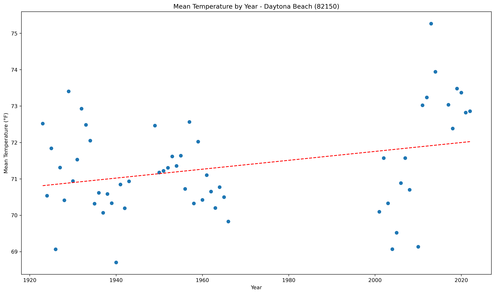
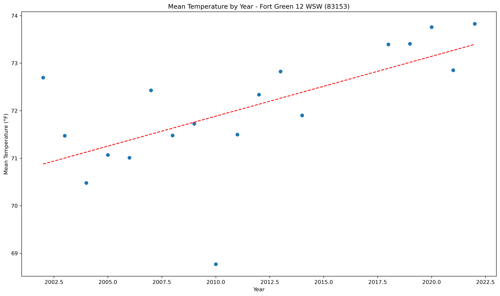
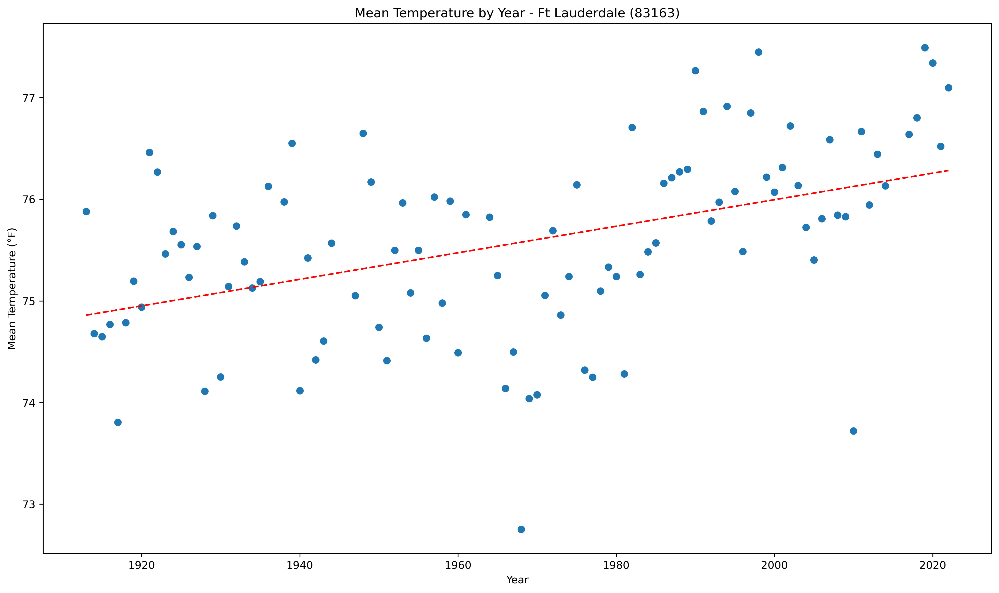
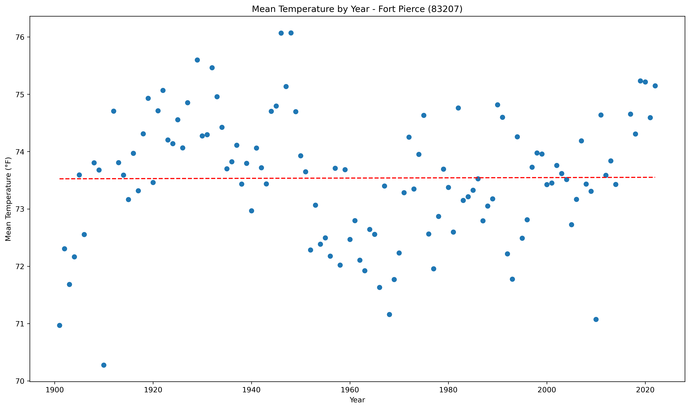
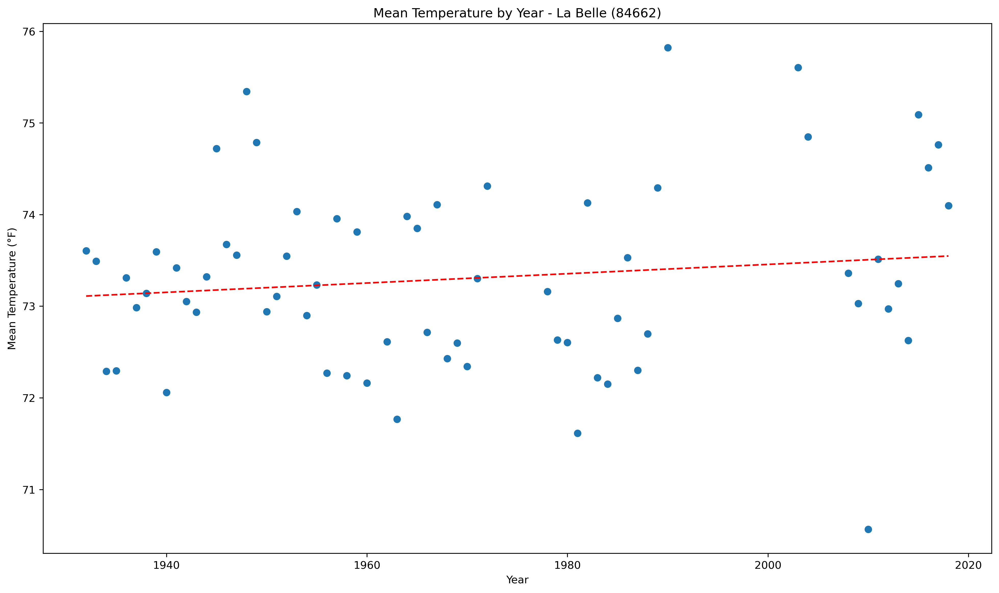
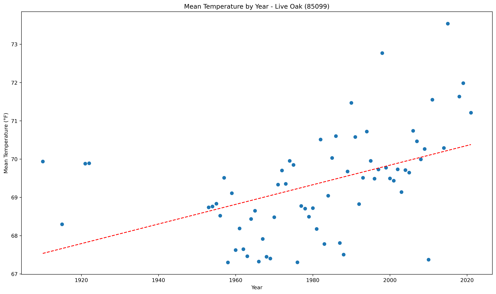
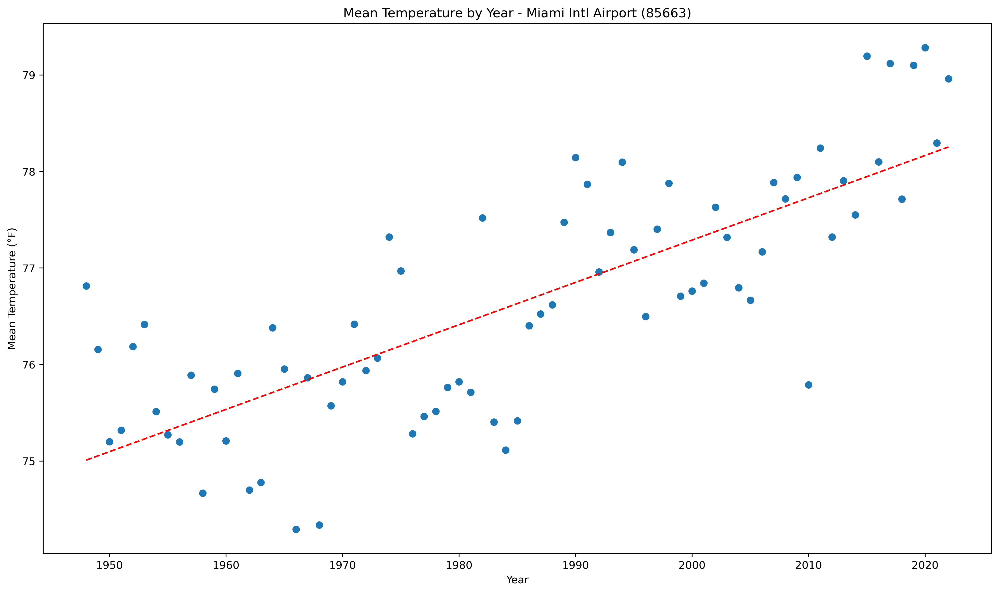
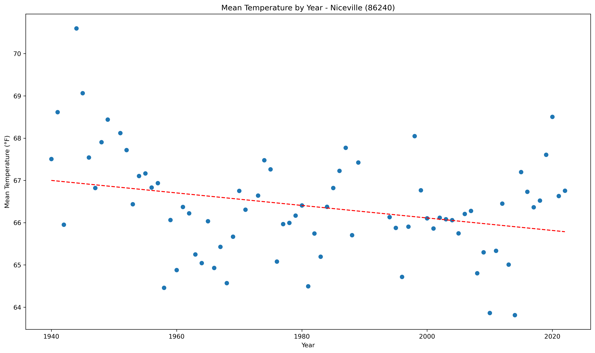
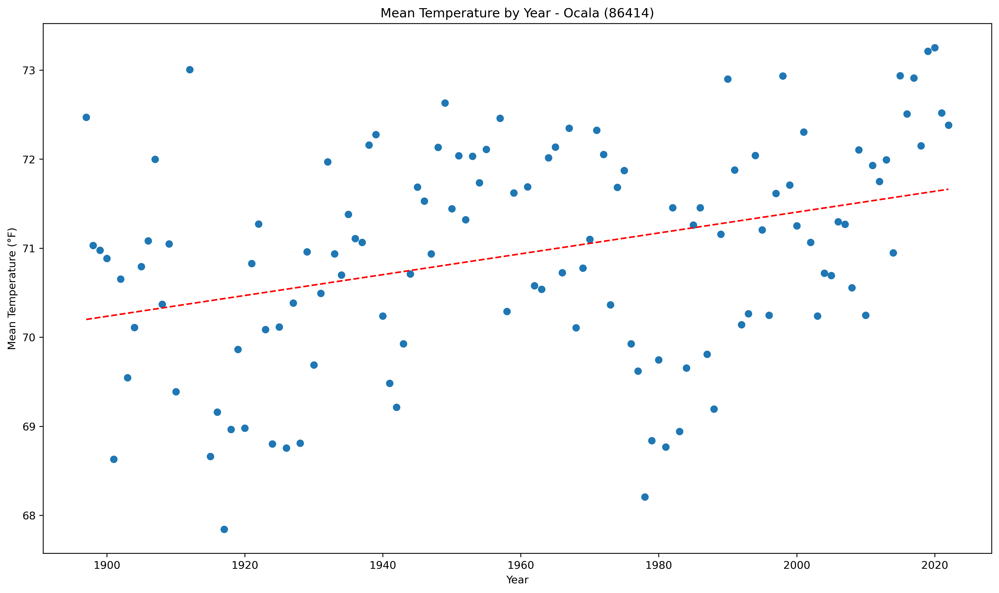

<!DOCTYPE html>
<html>
<head>
    
    <meta http-equiv="content-type" content="text/html; charset=UTF-8" />
    
        <script>
            L_NO_TOUCH = false;
            L_DISABLE_3D = false;
        </script>
    
    <style>html, body {width: 100%;height: 100%;margin: 0;padding: 0;}</style>
    <style>#map {position:absolute;top:0;bottom:0;right:0;left:0;}</style>
    <script src="https://cdn.jsdelivr.net/npm/leaflet@1.9.3/dist/leaflet.js"></script>
    <script src="https://code.jquery.com/jquery-1.12.4.min.js"></script>
    <script src="https://cdn.jsdelivr.net/npm/bootstrap@5.2.2/dist/js/bootstrap.bundle.min.js"></script>
    <script src="https://cdnjs.cloudflare.com/ajax/libs/Leaflet.awesome-markers/2.0.2/leaflet.awesome-markers.js"></script>
    <link rel="stylesheet" href="https://cdn.jsdelivr.net/npm/leaflet@1.9.3/dist/leaflet.css"/>
    <link rel="stylesheet" href="https://cdn.jsdelivr.net/npm/bootstrap@5.2.2/dist/css/bootstrap.min.css"/>
    <link rel="stylesheet" href="https://netdna.bootstrapcdn.com/bootstrap/3.0.0/css/bootstrap.min.css"/>
    <link rel="stylesheet" href="https://cdn.jsdelivr.net/npm/@fortawesome/fontawesome-free@6.2.0/css/all.min.css"/>
    <link rel="stylesheet" href="https://cdnjs.cloudflare.com/ajax/libs/Leaflet.awesome-markers/2.0.2/leaflet.awesome-markers.css"/>
    <link rel="stylesheet" href="https://cdn.jsdelivr.net/gh/python-visualization/folium/folium/templates/leaflet.awesome.rotate.min.css"/>
    
            <meta name="viewport" content="width=device-width,
                initial-scale=1.0, maximum-scale=1.0, user-scalable=no" />
            <style>
                #map_4850f3b738bcc35ebcbbc39568b5fb7c {
                    position: relative;
                    width: 100.0%;
                    height: 100.0%;
                    left: 0.0%;
                    top: 0.0%;
                }
                .leaflet-container { font-size: 1rem; }
            </style>
        
</head>
<body>
    
    
            <div class="folium-map" id="map_4850f3b738bcc35ebcbbc39568b5fb7c" ></div>
        
</body>
<script>
    
    
            var map_4850f3b738bcc35ebcbbc39568b5fb7c = L.map(
                "map_4850f3b738bcc35ebcbbc39568b5fb7c",
                {
                    center: [28.0, -82.5],
                    crs: L.CRS.EPSG3857,
                    zoom: 7,
                    zoomControl: false,
                    preferCanvas: false,
                }
            );

            

        
    
            var tile_layer_ffd85356839e32795fe6bca83aa9ff26 = L.tileLayer(
                "https://cartodb-basemaps-{s}.global.ssl.fastly.net/dark_all/{z}/{x}/{y}.png",
                {"attribution": "\u0026copy; \u003ca target=\"_blank\" href=\"http://www.openstreetmap.org/copyright\"\u003eOpenStreetMap\u003c/a\u003e contributors \u0026copy; \u003ca target=\"_blank\" href=\"http://cartodb.com/attributions\"\u003eCartoDB\u003c/a\u003e, CartoDB \u003ca target=\"_blank\" href =\"http://cartodb.com/attributions\"\u003eattributions\u003c/a\u003e", "detectRetina": false, "maxNativeZoom": 18, "maxZoom": 18, "minZoom": 7, "noWrap": false, "opacity": 1, "subdomains": "abc", "tms": false}
            ).addTo(map_4850f3b738bcc35ebcbbc39568b5fb7c);
        
    
            var marker_2589d93c103ff5b05811ff66dfa0fea9 = L.marker(
                [29.72, -85.03],
                {}
            ).addTo(map_4850f3b738bcc35ebcbbc39568b5fb7c);
        
    
            var icon_5e8a38e2a7ed8fe4606ea81e0754ddf5 = L.AwesomeMarkers.icon(
                {"extraClasses": "fa-rotate-0", "icon": "info-sign", "iconColor": "white", "markerColor": "orange", "prefix": "glyphicon"}
            );
            marker_2589d93c103ff5b05811ff66dfa0fea9.setIcon(icon_5e8a38e2a7ed8fe4606ea81e0754ddf5);
        
    
        var popup_70c694b598c8549031fc2f6e836d7f5c = L.popup({"maxWidth": 1000, "minWidth": 500});

        
            
                var html_dbbd2c4b44720bcd220eddf891030932 = $(`<div id="html_dbbd2c4b44720bcd220eddf891030932" style="width: 100.0%; height: 100.0%;"><b>Apalachicola Airport (80211)</b><br>lat: 29.72, lon: -85.03<br><a href='../../static/img/plots/trends/meantemp_yearly/80211_mean_trend_yearly.png' target='_BLANK'></a></div>`)[0];
                popup_70c694b598c8549031fc2f6e836d7f5c.setContent(html_dbbd2c4b44720bcd220eddf891030932);
            
        

        marker_2589d93c103ff5b05811ff66dfa0fea9.bindPopup(popup_70c694b598c8549031fc2f6e836d7f5c)
        ;

        
    
    
            var marker_7d64633fa23325bab0c1ee78f67d7cbd = L.marker(
                [27.22, -81.86],
                {}
            ).addTo(map_4850f3b738bcc35ebcbbc39568b5fb7c);
        
    
            var icon_f33d0ab30ef42059ae67b730b7381f34 = L.AwesomeMarkers.icon(
                {"extraClasses": "fa-rotate-0", "icon": "info-sign", "iconColor": "white", "markerColor": "blue", "prefix": "glyphicon"}
            );
            marker_7d64633fa23325bab0c1ee78f67d7cbd.setIcon(icon_f33d0ab30ef42059ae67b730b7381f34);
        
    
        var popup_af6846c143804bee5e4c03ed368aa31b = L.popup({"maxWidth": 1000, "minWidth": 500});

        
            
                var html_4d84b27fc7355d0a516d732a02cd60a1 = $(`<div id="html_4d84b27fc7355d0a516d732a02cd60a1" style="width: 100.0%; height: 100.0%;"><b>Arcadia (80228)</b><br>lat: 27.22, lon: -81.86<br><a href='../../static/img/plots/trends/meantemp_yearly/80228_mean_trend_yearly.png' target='_BLANK'></a></div>`)[0];
                popup_af6846c143804bee5e4c03ed368aa31b.setContent(html_4d84b27fc7355d0a516d732a02cd60a1);
            
        

        marker_7d64633fa23325bab0c1ee78f67d7cbd.bindPopup(popup_af6846c143804bee5e4c03ed368aa31b)
        ;

        
    
    
            var marker_dd7bbdcfdc66ea23563fe17ffd70a4b9 = L.marker(
                [27.18, -81.35],
                {}
            ).addTo(map_4850f3b738bcc35ebcbbc39568b5fb7c);
        
    
            var icon_e9025de88cfc7ec649ac4611b90e04e6 = L.AwesomeMarkers.icon(
                {"extraClasses": "fa-rotate-0", "icon": "info-sign", "iconColor": "white", "markerColor": "red", "prefix": "glyphicon"}
            );
            marker_dd7bbdcfdc66ea23563fe17ffd70a4b9.setIcon(icon_e9025de88cfc7ec649ac4611b90e04e6);
        
    
        var popup_62187fb0bbde364ad987e1cb09e3989f = L.popup({"maxWidth": 1000, "minWidth": 500});

        
            
                var html_010cdc8812ccafb619a9b4c2b8626de7 = $(`<div id="html_010cdc8812ccafb619a9b4c2b8626de7" style="width: 100.0%; height: 100.0%;"><b>Archbold Bio Station (80236)</b><br>lat: 27.18, lon: -81.35<br><a href='../../static/img/plots/trends/meantemp_yearly/80236_mean_trend_yearly.png' target='_BLANK'></a></div>`)[0];
                popup_62187fb0bbde364ad987e1cb09e3989f.setContent(html_010cdc8812ccafb619a9b4c2b8626de7);
            
        

        marker_dd7bbdcfdc66ea23563fe17ffd70a4b9.bindPopup(popup_62187fb0bbde364ad987e1cb09e3989f)
        ;

        
    
    
            var marker_dba634fba338d3361f1bb1eaa164c71b = L.marker(
                [27.59, -81.53],
                {}
            ).addTo(map_4850f3b738bcc35ebcbbc39568b5fb7c);
        
    
            var icon_a02edee95a0978cfd1bf8e302a7a9fc2 = L.AwesomeMarkers.icon(
                {"extraClasses": "fa-rotate-0", "icon": "info-sign", "iconColor": "white", "markerColor": "blue", "prefix": "glyphicon"}
            );
            marker_dba634fba338d3361f1bb1eaa164c71b.setIcon(icon_a02edee95a0978cfd1bf8e302a7a9fc2);
        
    
        var popup_983e274a89579d6f54ea281e72b221eb = L.popup({"maxWidth": 1000, "minWidth": 500});

        
            
                var html_560904049afff7aa616f05c1be57b9ad = $(`<div id="html_560904049afff7aa616f05c1be57b9ad" style="width: 100.0%; height: 100.0%;"><b>Avon Park 2 W (80369)</b><br>lat: 27.59, lon: -81.53<br><a href='../../static/img/plots/trends/meantemp_yearly/80369_mean_trend_yearly.png' target='_BLANK'></a></div>`)[0];
                popup_983e274a89579d6f54ea281e72b221eb.setContent(html_560904049afff7aa616f05c1be57b9ad);
            
        

        marker_dba634fba338d3361f1bb1eaa164c71b.bindPopup(popup_983e274a89579d6f54ea281e72b221eb)
        ;

        
    
    
            var marker_be0031905f9905874747e65a95abf30e = L.marker(
                [27.95, -81.79],
                {}
            ).addTo(map_4850f3b738bcc35ebcbbc39568b5fb7c);
        
    
            var icon_2e1474dcff1dca7bff9f57bc386d7b42 = L.AwesomeMarkers.icon(
                {"extraClasses": "fa-rotate-0", "icon": "info-sign", "iconColor": "white", "markerColor": "orange", "prefix": "glyphicon"}
            );
            marker_be0031905f9905874747e65a95abf30e.setIcon(icon_2e1474dcff1dca7bff9f57bc386d7b42);
        
    
        var popup_7e7b3069dd3daf63bf60334dd0f43480 = L.popup({"maxWidth": 1000, "minWidth": 500});

        
            
                var html_4abe587c5d9ef821818465997bbacbf9 = $(`<div id="html_4abe587c5d9ef821818465997bbacbf9" style="width: 100.0%; height: 100.0%;"><b>Bartow (80478)</b><br>lat: 27.95, lon: -81.79<br><a href='../../static/img/plots/trends/meantemp_yearly/80478_mean_trend_yearly.png' target='_BLANK'></a></div>`)[0];
                popup_7e7b3069dd3daf63bf60334dd0f43480.setContent(html_4abe587c5d9ef821818465997bbacbf9);
            
        

        marker_be0031905f9905874747e65a95abf30e.bindPopup(popup_7e7b3069dd3daf63bf60334dd0f43480)
        ;

        
    
    
            var marker_dedf7a9a2785530b46165327b03fa6d5 = L.marker(
                [26.7, -80.66],
                {}
            ).addTo(map_4850f3b738bcc35ebcbbc39568b5fb7c);
        
    
            var icon_0437d99b6b4ddf3f5b11eae6a8d9a8ea = L.AwesomeMarkers.icon(
                {"extraClasses": "fa-rotate-0", "icon": "info-sign", "iconColor": "white", "markerColor": "red", "prefix": "glyphicon"}
            );
            marker_dedf7a9a2785530b46165327b03fa6d5.setIcon(icon_0437d99b6b4ddf3f5b11eae6a8d9a8ea);
        
    
        var popup_8af72c88d85030affe53dfa557cf39f9 = L.popup({"maxWidth": 1000, "minWidth": 500});

        
            
                var html_cfd7224db70ede5b508278e5dddb9f2f = $(`<div id="html_cfd7224db70ede5b508278e5dddb9f2f" style="width: 100.0%; height: 100.0%;"><b>Belle Glade Airport (80611)</b><br>lat: 26.7, lon: -80.66<br><a href='../../static/img/plots/trends/meantemp_yearly/80611_mean_trend_yearly.png' target='_BLANK'></a></div>`)[0];
                popup_8af72c88d85030affe53dfa557cf39f9.setContent(html_cfd7224db70ede5b508278e5dddb9f2f);
            
        

        marker_dedf7a9a2785530b46165327b03fa6d5.bindPopup(popup_8af72c88d85030affe53dfa557cf39f9)
        ;

        
    
    
            var marker_7147cb9be068d05b46038099a84042c5 = L.marker(
                [27.5, -82.57],
                {}
            ).addTo(map_4850f3b738bcc35ebcbbc39568b5fb7c);
        
    
            var icon_3dd5e1c7cf86529715135a0c95dff9b3 = L.AwesomeMarkers.icon(
                {"extraClasses": "fa-rotate-0", "icon": "info-sign", "iconColor": "white", "markerColor": "red", "prefix": "glyphicon"}
            );
            marker_7147cb9be068d05b46038099a84042c5.setIcon(icon_3dd5e1c7cf86529715135a0c95dff9b3);
        
    
        var popup_7a75e52020b8e238a5a722b24f0c3846 = L.popup({"maxWidth": 1000, "minWidth": 500});

        
            
                var html_4d02eeb92483c39a9226750eb4347417 = $(`<div id="html_4d02eeb92483c39a9226750eb4347417" style="width: 100.0%; height: 100.0%;"><b>Bradenton 5 ESE (80945)</b><br>lat: 27.5, lon: -82.57<br><a href='../../static/img/plots/trends/meantemp_yearly/80945_mean_trend_yearly.png' target='_BLANK'></a></div>`)[0];
                popup_7a75e52020b8e238a5a722b24f0c3846.setContent(html_4d02eeb92483c39a9226750eb4347417);
            
        

        marker_7147cb9be068d05b46038099a84042c5.bindPopup(popup_7a75e52020b8e238a5a722b24f0c3846)
        ;

        
    
    
            var marker_2a7147b18f9f76c2d6e9b1d3c9162cb8 = L.marker(
                [28.62, -82.37],
                {}
            ).addTo(map_4850f3b738bcc35ebcbbc39568b5fb7c);
        
    
            var icon_c6817634a87cdcf28df4de151e5d7a75 = L.AwesomeMarkers.icon(
                {"extraClasses": "fa-rotate-0", "icon": "info-sign", "iconColor": "white", "markerColor": "orange", "prefix": "glyphicon"}
            );
            marker_2a7147b18f9f76c2d6e9b1d3c9162cb8.setIcon(icon_c6817634a87cdcf28df4de151e5d7a75);
        
    
        var popup_5f7b91fda9afbc898154f7b04a1328e9 = L.popup({"maxWidth": 1000, "minWidth": 500});

        
            
                var html_456219fe60e15c2e3ef6f00feb9ac4a3 = $(`<div id="html_456219fe60e15c2e3ef6f00feb9ac4a3" style="width: 100.0%; height: 100.0%;"><b>Chinsegut Hill (81046)</b><br>lat: 28.62, lon: -82.37<br><a href='../../static/img/plots/trends/meantemp_yearly/81046_mean_trend_yearly.png' target='_BLANK'></a></div>`)[0];
                popup_5f7b91fda9afbc898154f7b04a1328e9.setContent(html_456219fe60e15c2e3ef6f00feb9ac4a3);
            
        

        marker_2a7147b18f9f76c2d6e9b1d3c9162cb8.bindPopup(popup_5f7b91fda9afbc898154f7b04a1328e9)
        ;

        
    
    
            var marker_74a3e9820b42a697cb47bd84a90a0527 = L.marker(
                [28.66, -82.11],
                {}
            ).addTo(map_4850f3b738bcc35ebcbbc39568b5fb7c);
        
    
            var icon_dae3d3a93dc245b8e89901423c6880d9 = L.AwesomeMarkers.icon(
                {"extraClasses": "fa-rotate-0", "icon": "info-sign", "iconColor": "white", "markerColor": "orange", "prefix": "glyphicon"}
            );
            marker_74a3e9820b42a697cb47bd84a90a0527.setIcon(icon_dae3d3a93dc245b8e89901423c6880d9);
        
    
        var popup_b1af3629391d45a71f364d9667e96bb3 = L.popup({"maxWidth": 1000, "minWidth": 500});

        
            
                var html_e32b70bf1200b5710c887c457e81e887 = $(`<div id="html_e32b70bf1200b5710c887c457e81e887" style="width: 100.0%; height: 100.0%;"><b>Bushnell 1 E (81163)</b><br>lat: 28.66, lon: -82.11<br><a href='../../static/img/plots/trends/meantemp_yearly/81163_mean_trend_yearly.png' target='_BLANK'></a></div>`)[0];
                popup_b1af3629391d45a71f364d9667e96bb3.setContent(html_e32b70bf1200b5710c887c457e81e887);
            
        

        marker_74a3e9820b42a697cb47bd84a90a0527.bindPopup(popup_b1af3629391d45a71f364d9667e96bb3)
        ;

        
    
    
            var marker_975b9d0131f053393809bbc3d61331d5 = L.marker(
                [26.86, -80.63],
                {}
            ).addTo(map_4850f3b738bcc35ebcbbc39568b5fb7c);
        
    
            var icon_81712e1bc5c57b37be7c06b2a5a42dee = L.AwesomeMarkers.icon(
                {"extraClasses": "fa-rotate-0", "icon": "info-sign", "iconColor": "white", "markerColor": "red", "prefix": "glyphicon"}
            );
            marker_975b9d0131f053393809bbc3d61331d5.setIcon(icon_81712e1bc5c57b37be7c06b2a5a42dee);
        
    
        var popup_d8f7aebe2b54942a5ff8d193e5287050 = L.popup({"maxWidth": 1000, "minWidth": 500});

        
            
                var html_4daeb1703afbbb2ac43f45dbca898f53 = $(`<div id="html_4daeb1703afbbb2ac43f45dbca898f53" style="width: 100.0%; height: 100.0%;"><b>Canal Point (81276)</b><br>lat: 26.86, lon: -80.63<br><a href='../../static/img/plots/trends/meantemp_yearly/81276_mean_trend_yearly.png' target='_BLANK'></a></div>`)[0];
                popup_d8f7aebe2b54942a5ff8d193e5287050.setContent(html_4daeb1703afbbb2ac43f45dbca898f53);
            
        

        marker_975b9d0131f053393809bbc3d61331d5.bindPopup(popup_d8f7aebe2b54942a5ff8d193e5287050)
        ;

        
    
    
            var marker_1b8f80cdc0ef57f519f56744bf9307fd = L.marker(
                [30.78, -85.54],
                {}
            ).addTo(map_4850f3b738bcc35ebcbbc39568b5fb7c);
        
    
            var icon_9cb8f2328272e608daeea119b8a41d79 = L.AwesomeMarkers.icon(
                {"extraClasses": "fa-rotate-0", "icon": "info-sign", "iconColor": "white", "markerColor": "blue", "prefix": "glyphicon"}
            );
            marker_1b8f80cdc0ef57f519f56744bf9307fd.setIcon(icon_9cb8f2328272e608daeea119b8a41d79);
        
    
        var popup_d483abf9b3d954b4da622936ffbdf5b3 = L.popup({"maxWidth": 1000, "minWidth": 500});

        
            
                var html_1f041382609d1d406c65f49a543f5021 = $(`<div id="html_1f041382609d1d406c65f49a543f5021" style="width: 100.0%; height: 100.0%;"><b>Chipley (81544)</b><br>lat: 30.78, lon: -85.54<br><a href='../../static/img/plots/trends/meantemp_yearly/81544_mean_trend_yearly.png' target='_BLANK'></a></div>`)[0];
                popup_d483abf9b3d954b4da622936ffbdf5b3.setContent(html_1f041382609d1d406c65f49a543f5021);
            
        

        marker_1b8f80cdc0ef57f519f56744bf9307fd.bindPopup(popup_d483abf9b3d954b4da622936ffbdf5b3)
        ;

        
    
    
            var marker_10c899df2144c78232edc4398e3a3c38 = L.marker(
                [28.56, -81.77],
                {}
            ).addTo(map_4850f3b738bcc35ebcbbc39568b5fb7c);
        
    
            var icon_d57af0b2ff49e4186b59f3799251cd2f = L.AwesomeMarkers.icon(
                {"extraClasses": "fa-rotate-0", "icon": "info-sign", "iconColor": "white", "markerColor": "orange", "prefix": "glyphicon"}
            );
            marker_10c899df2144c78232edc4398e3a3c38.setIcon(icon_d57af0b2ff49e4186b59f3799251cd2f);
        
    
        var popup_cbedc0eaff6bd4492783bc5bea5bdb9e = L.popup({"maxWidth": 1000, "minWidth": 500});

        
            
                var html_3d82ec23c54075055544de73ba8a1299 = $(`<div id="html_3d82ec23c54075055544de73ba8a1299" style="width: 100.0%; height: 100.0%;"><b>Clermont 9 S (81641)</b><br>lat: 28.56, lon: -81.77<br><a href='../../static/img/plots/trends/meantemp_yearly/81641_mean_trend_yearly.png' target='_BLANK'></a></div>`)[0];
                popup_cbedc0eaff6bd4492783bc5bea5bdb9e.setContent(html_3d82ec23c54075055544de73ba8a1299);
            
        

        marker_10c899df2144c78232edc4398e3a3c38.bindPopup(popup_cbedc0eaff6bd4492783bc5bea5bdb9e)
        ;

        
    
    
            var marker_ef8497fb2dbcd625878661e1c7c0265d = L.marker(
                [29.43, -81.51],
                {}
            ).addTo(map_4850f3b738bcc35ebcbbc39568b5fb7c);
        
    
            var icon_6fcd7ff7aec2de6e036b88d4a2b898d3 = L.AwesomeMarkers.icon(
                {"extraClasses": "fa-rotate-0", "icon": "info-sign", "iconColor": "white", "markerColor": "orange", "prefix": "glyphicon"}
            );
            marker_ef8497fb2dbcd625878661e1c7c0265d.setIcon(icon_6fcd7ff7aec2de6e036b88d4a2b898d3);
        
    
        var popup_19c1ee3990bea680766cc56cd42c9271 = L.popup({"maxWidth": 1000, "minWidth": 500});

        
            
                var html_6d1abf2ff01229209bedbb7d6dcf50f1 = $(`<div id="html_6d1abf2ff01229209bedbb7d6dcf50f1" style="width: 100.0%; height: 100.0%;"><b>Crescent City (81978)</b><br>lat: 29.43, lon: -81.51<br><a href='../../static/img/plots/trends/meantemp_yearly/81978_mean_trend_yearly.png' target='_BLANK'></a></div>`)[0];
                popup_19c1ee3990bea680766cc56cd42c9271.setContent(html_6d1abf2ff01229209bedbb7d6dcf50f1);
            
        

        marker_ef8497fb2dbcd625878661e1c7c0265d.bindPopup(popup_19c1ee3990bea680766cc56cd42c9271)
        ;

        
    
    
            var marker_460d32f5843eb522e681506a1e72f8c4 = L.marker(
                [30.78, -86.52],
                {}
            ).addTo(map_4850f3b738bcc35ebcbbc39568b5fb7c);
        
    
            var icon_7f3223bd43f6388ba1cd073a1f93daa7 = L.AwesomeMarkers.icon(
                {"extraClasses": "fa-rotate-0", "icon": "info-sign", "iconColor": "white", "markerColor": "orange", "prefix": "glyphicon"}
            );
            marker_460d32f5843eb522e681506a1e72f8c4.setIcon(icon_7f3223bd43f6388ba1cd073a1f93daa7);
        
    
        var popup_9f55056ec24bfb623143c27de2a50fa9 = L.popup({"maxWidth": 1000, "minWidth": 500});

        
            
                var html_67254a357d82e63718df7a1a1dfb07bb = $(`<div id="html_67254a357d82e63718df7a1a1dfb07bb" style="width: 100.0%; height: 100.0%;"><b>Crestview Bob Sikes Airport (81986)</b><br>lat: 30.78, lon: -86.52<br><a href='../../static/img/plots/trends/meantemp_yearly/81986_mean_trend_yearly.png' target='_BLANK'></a></div>`)[0];
                popup_9f55056ec24bfb623143c27de2a50fa9.setContent(html_67254a357d82e63718df7a1a1dfb07bb);
            
        

        marker_460d32f5843eb522e681506a1e72f8c4.bindPopup(popup_9f55056ec24bfb623143c27de2a50fa9)
        ;

        
    
    
            var marker_0866f97b55b20a4370d77f6c6dc32979 = L.marker(
                [29.63, -83.13],
                {}
            ).addTo(map_4850f3b738bcc35ebcbbc39568b5fb7c);
        
    
            var icon_28501d67bc276e0152a923be4f59a74b = L.AwesomeMarkers.icon(
                {"extraClasses": "fa-rotate-0", "icon": "info-sign", "iconColor": "white", "markerColor": "orange", "prefix": "glyphicon"}
            );
            marker_0866f97b55b20a4370d77f6c6dc32979.setIcon(icon_28501d67bc276e0152a923be4f59a74b);
        
    
        var popup_0f7851e2682de5c745ceef10bafaa110 = L.popup({"maxWidth": 1000, "minWidth": 500});

        
            
                var html_3a6fb7a8a65aa94a3dd29c30edfae955 = $(`<div id="html_3a6fb7a8a65aa94a3dd29c30edfae955" style="width: 100.0%; height: 100.0%;"><b>Cross City 1 E (82008)</b><br>lat: 29.63, lon: -83.13<br><a href='../../static/img/plots/trends/meantemp_yearly/82008_mean_trend_yearly.png' target='_BLANK'></a></div>`)[0];
                popup_0f7851e2682de5c745ceef10bafaa110.setContent(html_3a6fb7a8a65aa94a3dd29c30edfae955);
            
        

        marker_0866f97b55b20a4370d77f6c6dc32979.bindPopup(popup_0f7851e2682de5c745ceef10bafaa110)
        ;

        
    
    
            var marker_ef9f97ede3dd8e3df51ab9051f08fde8 = L.marker(
                [29.16, -81.0],
                {}
            ).addTo(map_4850f3b738bcc35ebcbbc39568b5fb7c);
        
    
            var icon_8160425a8af5c2252daa81eec9d1c10b = L.AwesomeMarkers.icon(
                {"extraClasses": "fa-rotate-0", "icon": "info-sign", "iconColor": "white", "markerColor": "orange", "prefix": "glyphicon"}
            );
            marker_ef9f97ede3dd8e3df51ab9051f08fde8.setIcon(icon_8160425a8af5c2252daa81eec9d1c10b);
        
    
        var popup_47f6c8a2364257bc60806307a0f7feae = L.popup({"maxWidth": 1000, "minWidth": 500});

        
            
                var html_4df240ed9f123d215c4a3748b282c40b = $(`<div id="html_4df240ed9f123d215c4a3748b282c40b" style="width: 100.0%; height: 100.0%;"><b>Daytona Beach (82150)</b><br>lat: 29.16, lon: -81<br><a href='../../static/img/plots/trends/meantemp_yearly/82150_mean_trend_yearly.png' target='_BLANK'></a></div>`)[0];
                popup_47f6c8a2364257bc60806307a0f7feae.setContent(html_4df240ed9f123d215c4a3748b282c40b);
            
        

        marker_ef9f97ede3dd8e3df51ab9051f08fde8.bindPopup(popup_47f6c8a2364257bc60806307a0f7feae)
        ;

        
    
    
            var marker_8669a4226e6a5924e52063da5ec89ddd = L.marker(
                [29.18, -81.06],
                {}
            ).addTo(map_4850f3b738bcc35ebcbbc39568b5fb7c);
        
    
            var icon_72f28fe394e172a602d58f7b464db4b1 = L.AwesomeMarkers.icon(
                {"extraClasses": "fa-rotate-0", "icon": "info-sign", "iconColor": "white", "markerColor": "red", "prefix": "glyphicon"}
            );
            marker_8669a4226e6a5924e52063da5ec89ddd.setIcon(icon_72f28fe394e172a602d58f7b464db4b1);
        
    
        var popup_bc6c94843016665fd0da503b674d4a15 = L.popup({"maxWidth": 1000, "minWidth": 500});

        
            
                var html_d7fd7509b835b76e78bff7bfea347756 = $(`<div id="html_d7fd7509b835b76e78bff7bfea347756" style="width: 100.0%; height: 100.0%;"><b>Daytona Beach Intl Airport (82158)</b><br>lat: 29.18, lon: -81.06<br><a href='../../static/img/plots/trends/meantemp_yearly/82158_mean_trend_yearly.png' target='_BLANK'></a></div>`)[0];
                popup_bc6c94843016665fd0da503b674d4a15.setContent(html_d7fd7509b835b76e78bff7bfea347756);
            
        

        marker_8669a4226e6a5924e52063da5ec89ddd.bindPopup(popup_bc6c94843016665fd0da503b674d4a15)
        ;

        
    
    
            var marker_dd47a6974684792f9fd6704732eeb22a = L.marker(
                [30.72, -86.12],
                {}
            ).addTo(map_4850f3b738bcc35ebcbbc39568b5fb7c);
        
    
            var icon_fe2faafc082825cce21999da1cfc9b8d = L.AwesomeMarkers.icon(
                {"extraClasses": "fa-rotate-0", "icon": "info-sign", "iconColor": "white", "markerColor": "blue", "prefix": "glyphicon"}
            );
            marker_dd47a6974684792f9fd6704732eeb22a.setIcon(icon_fe2faafc082825cce21999da1cfc9b8d);
        
    
        var popup_1e83a405ea5acf81ee00bc37c97a60f2 = L.popup({"maxWidth": 1000, "minWidth": 500});

        
            
                var html_727d5c0a70d55b3d150476fab13d4058 = $(`<div id="html_727d5c0a70d55b3d150476fab13d4058" style="width: 100.0%; height: 100.0%;"><b>De Funiak Springs 1 E (82220)</b><br>lat: 30.72, lon: -86.12<br><a href='../../static/img/plots/trends/meantemp_yearly/82220_mean_trend_yearly.png' target='_BLANK'></a></div>`)[0];
                popup_1e83a405ea5acf81ee00bc37c97a60f2.setContent(html_727d5c0a70d55b3d150476fab13d4058);
            
        

        marker_dd47a6974684792f9fd6704732eeb22a.bindPopup(popup_1e83a405ea5acf81ee00bc37c97a60f2)
        ;

        
    
    
            var marker_47b37abdefbb54fa0b2cda22783a736d = L.marker(
                [29.03, -81.3],
                {}
            ).addTo(map_4850f3b738bcc35ebcbbc39568b5fb7c);
        
    
            var icon_b74b3aa9a8f0f0abc5ef858eece4b8d3 = L.AwesomeMarkers.icon(
                {"extraClasses": "fa-rotate-0", "icon": "info-sign", "iconColor": "white", "markerColor": "blue", "prefix": "glyphicon"}
            );
            marker_47b37abdefbb54fa0b2cda22783a736d.setIcon(icon_b74b3aa9a8f0f0abc5ef858eece4b8d3);
        
    
        var popup_d04ed1584aad576a438a6e04e5b73efc = L.popup({"maxWidth": 1000, "minWidth": 500});

        
            
                var html_6b818f5ba4b05c07aa380e3179a2b639 = $(`<div id="html_6b818f5ba4b05c07aa380e3179a2b639" style="width: 100.0%; height: 100.0%;"><b>Deland 1 SSE (82229)</b><br>lat: 29.03, lon: -81.3<br><a href='../../static/img/plots/trends/meantemp_yearly/82229_mean_trend_yearly.png' target='_BLANK'></a></div>`)[0];
                popup_d04ed1584aad576a438a6e04e5b73efc.setContent(html_6b818f5ba4b05c07aa380e3179a2b639);
            
        

        marker_47b37abdefbb54fa0b2cda22783a736d.bindPopup(popup_d04ed1584aad576a438a6e04e5b73efc)
        ;

        
    
    
            var marker_b03657aa0da1c58d4401c59b211e1e30 = L.marker(
                [30.71, -85.72],
                {}
            ).addTo(map_4850f3b738bcc35ebcbbc39568b5fb7c);
        
    
            var icon_0593b4515281e4e241b8aa8f48ad4156 = L.AwesomeMarkers.icon(
                {"extraClasses": "fa-rotate-0", "icon": "info-sign", "iconColor": "white", "markerColor": "red", "prefix": "glyphicon"}
            );
            marker_b03657aa0da1c58d4401c59b211e1e30.setIcon(icon_0593b4515281e4e241b8aa8f48ad4156);
        
    
        var popup_e57e066b215160dc33c865012e7ec91b = L.popup({"maxWidth": 1000, "minWidth": 500});

        
            
                var html_63c004c1053b572242a516ca329a071b = $(`<div id="html_63c004c1053b572242a516ca329a071b" style="width: 100.0%; height: 100.0%;"><b>Devils Garden (82298)</b><br>lat: 30.71, lon: -85.72<br><a href='../../static/img/plots/trends/meantemp_yearly/82298_mean_trend_yearly.png' target='_BLANK'></a></div>`)[0];
                popup_e57e066b215160dc33c865012e7ec91b.setContent(html_63c004c1053b572242a516ca329a071b);
            
        

        marker_b03657aa0da1c58d4401c59b211e1e30.bindPopup(popup_e57e066b215160dc33c865012e7ec91b)
        ;

        
    
    
            var marker_cb203e97a26aad343d6b95a990284924 = L.marker(
                [25.29, -80.89],
                {}
            ).addTo(map_4850f3b738bcc35ebcbbc39568b5fb7c);
        
    
            var icon_42c93835e367aa6f48d4abf5d09fe9bd = L.AwesomeMarkers.icon(
                {"extraClasses": "fa-rotate-0", "icon": "info-sign", "iconColor": "white", "markerColor": "orange", "prefix": "glyphicon"}
            );
            marker_cb203e97a26aad343d6b95a990284924.setIcon(icon_42c93835e367aa6f48d4abf5d09fe9bd);
        
    
        var popup_bb46254cd66725f82adc5dd04dd84587 = L.popup({"maxWidth": 1000, "minWidth": 500});

        
            
                var html_741d5d442c53ccefe6466d24e1e7e66f = $(`<div id="html_741d5d442c53ccefe6466d24e1e7e66f" style="width: 100.0%; height: 100.0%;"><b>Everglades (82850)</b><br>lat: 25.29, lon: -80.89<br><a href='../../static/img/plots/trends/meantemp_yearly/82850_mean_trend_yearly.png' target='_BLANK'></a></div>`)[0];
                popup_bb46254cd66725f82adc5dd04dd84587.setContent(html_741d5d442c53ccefe6466d24e1e7e66f);
            
        

        marker_cb203e97a26aad343d6b95a990284924.bindPopup(popup_bb46254cd66725f82adc5dd04dd84587)
        ;

        
    
    
            var marker_1b62dccab99dcbc224c2c761459c303c = L.marker(
                [29.75, -81.54],
                {}
            ).addTo(map_4850f3b738bcc35ebcbbc39568b5fb7c);
        
    
            var icon_c4f2c8deca15244daa00cb5f7593befc = L.AwesomeMarkers.icon(
                {"extraClasses": "fa-rotate-0", "icon": "info-sign", "iconColor": "white", "markerColor": "orange", "prefix": "glyphicon"}
            );
            marker_1b62dccab99dcbc224c2c761459c303c.setIcon(icon_c4f2c8deca15244daa00cb5f7593befc);
        
    
        var popup_eab58462ad6e1726dbecf7fb792153a9 = L.popup({"maxWidth": 1000, "minWidth": 500});

        
            
                var html_f5a5d7918ada39af06f76a6cde9f0abe = $(`<div id="html_f5a5d7918ada39af06f76a6cde9f0abe" style="width: 100.0%; height: 100.0%;"><b>Federal Point (82915)</b><br>lat: 29.75, lon: -81.54<br><a href='../../static/img/plots/trends/meantemp_yearly/82915_mean_trend_yearly.png' target='_BLANK'></a></div>`)[0];
                popup_eab58462ad6e1726dbecf7fb792153a9.setContent(html_f5a5d7918ada39af06f76a6cde9f0abe);
            
        

        marker_1b62dccab99dcbc224c2c761459c303c.bindPopup(popup_eab58462ad6e1726dbecf7fb792153a9)
        ;

        
    
    
            var marker_c4903c3b1307ab2894ac9a95925f6293 = L.marker(
                [30.62, -81.46],
                {}
            ).addTo(map_4850f3b738bcc35ebcbbc39568b5fb7c);
        
    
            var icon_9e2c82547eced0c472b32775d4936d89 = L.AwesomeMarkers.icon(
                {"extraClasses": "fa-rotate-0", "icon": "info-sign", "iconColor": "white", "markerColor": "blue", "prefix": "glyphicon"}
            );
            marker_c4903c3b1307ab2894ac9a95925f6293.setIcon(icon_9e2c82547eced0c472b32775d4936d89);
        
    
        var popup_f8bcbee0ddbbc9a27a9fbc60c4ea6053 = L.popup({"maxWidth": 1000, "minWidth": 500});

        
            
                var html_96fd821794c4d8b6709fa513f7fff72b = $(`<div id="html_96fd821794c4d8b6709fa513f7fff72b" style="width: 100.0%; height: 100.0%;"><b>Fernandina Beach (82944)</b><br>lat: 30.62, lon: -81.46<br><a href='../../static/img/plots/trends/meantemp_yearly/82944_mean_trend_yearly.png' target='_BLANK'></a></div>`)[0];
                popup_f8bcbee0ddbbc9a27a9fbc60c4ea6053.setContent(html_96fd821794c4d8b6709fa513f7fff72b);
            
        

        marker_c4903c3b1307ab2894ac9a95925f6293.bindPopup(popup_f8bcbee0ddbbc9a27a9fbc60c4ea6053)
        ;

        
    
    
            var marker_1becdfac5ea3e4f0874a6da4d5b62416 = L.marker(
                [25.14, -80.93],
                {}
            ).addTo(map_4850f3b738bcc35ebcbbc39568b5fb7c);
        
    
            var icon_48fe03f89791c639ddbadbef7180c4fe = L.AwesomeMarkers.icon(
                {"extraClasses": "fa-rotate-0", "icon": "info-sign", "iconColor": "white", "markerColor": "red", "prefix": "glyphicon"}
            );
            marker_1becdfac5ea3e4f0874a6da4d5b62416.setIcon(icon_48fe03f89791c639ddbadbef7180c4fe);
        
    
        var popup_136f43b62f048367f7a41fafeeee105f = L.popup({"maxWidth": 1000, "minWidth": 500});

        
            
                var html_e09983d4ed371bdda927f2b642485eaa = $(`<div id="html_e09983d4ed371bdda927f2b642485eaa" style="width: 100.0%; height: 100.0%;"><b>Flamingo Ranger Station (83020)</b><br>lat: 25.14, lon: -80.93<br><a href='../../static/img/plots/trends/meantemp_yearly/83020_mean_trend_yearly.png' target='_BLANK'></a></div>`)[0];
                popup_136f43b62f048367f7a41fafeeee105f.setContent(html_e09983d4ed371bdda927f2b642485eaa);
            
        

        marker_1becdfac5ea3e4f0874a6da4d5b62416.bindPopup(popup_136f43b62f048367f7a41fafeeee105f)
        ;

        
    
    
            var marker_800710a9fd42227504eee2851fb7e326 = L.marker(
                [27.53, -80.81],
                {}
            ).addTo(map_4850f3b738bcc35ebcbbc39568b5fb7c);
        
    
            var icon_a3f92e25f0d08eb26c1676d581cc3efc = L.AwesomeMarkers.icon(
                {"extraClasses": "fa-rotate-0", "icon": "info-sign", "iconColor": "white", "markerColor": "orange", "prefix": "glyphicon"}
            );
            marker_800710a9fd42227504eee2851fb7e326.setIcon(icon_a3f92e25f0d08eb26c1676d581cc3efc);
        
    
        var popup_a5e2597009be61a225a18859c37972d6 = L.popup({"maxWidth": 1000, "minWidth": 500});

        
            
                var html_06099078af17c87e14349a587ec495c2 = $(`<div id="html_06099078af17c87e14349a587ec495c2" style="width: 100.0%; height: 100.0%;"><b>Fort Drum (83137)</b><br>lat: 27.53, lon: -80.81<br><a href='../../static/img/plots/trends/meantemp_yearly/83137_mean_trend_yearly.png' target='_BLANK'></a></div>`)[0];
                popup_a5e2597009be61a225a18859c37972d6.setContent(html_06099078af17c87e14349a587ec495c2);
            
        

        marker_800710a9fd42227504eee2851fb7e326.bindPopup(popup_a5e2597009be61a225a18859c37972d6)
        ;

        
    
    
            var marker_9527ebe55951a6311f054dcfbef0a6fe = L.marker(
                [27.61, -81.94],
                {}
            ).addTo(map_4850f3b738bcc35ebcbbc39568b5fb7c);
        
    
            var icon_04159c62945f2934bae46d091ff536b7 = L.AwesomeMarkers.icon(
                {"extraClasses": "fa-rotate-0", "icon": "info-sign", "iconColor": "white", "markerColor": "red", "prefix": "glyphicon"}
            );
            marker_9527ebe55951a6311f054dcfbef0a6fe.setIcon(icon_04159c62945f2934bae46d091ff536b7);
        
    
        var popup_55d36c96fe3259e82e51d52e0bdb3efc = L.popup({"maxWidth": 1000, "minWidth": 500});

        
            
                var html_dd5fb7c58f678efef85d1665e1d6cdcb = $(`<div id="html_dd5fb7c58f678efef85d1665e1d6cdcb" style="width: 100.0%; height: 100.0%;"><b>Fort Green 12 WSW (83153)</b><br>lat: 27.61, lon: -81.94<br><a href='../../static/img/plots/trends/meantemp_yearly/83153_mean_trend_yearly.png' target='_BLANK'></a></div>`)[0];
                popup_55d36c96fe3259e82e51d52e0bdb3efc.setContent(html_dd5fb7c58f678efef85d1665e1d6cdcb);
            
        

        marker_9527ebe55951a6311f054dcfbef0a6fe.bindPopup(popup_55d36c96fe3259e82e51d52e0bdb3efc)
        ;

        
    
    
            var marker_85b018eaca45554e16a9a47ab2852968 = L.marker(
                [26.07, -80.15],
                {}
            ).addTo(map_4850f3b738bcc35ebcbbc39568b5fb7c);
        
    
            var icon_04b557d2b7a5fd51b5f5f4aa258e9950 = L.AwesomeMarkers.icon(
                {"extraClasses": "fa-rotate-0", "icon": "info-sign", "iconColor": "white", "markerColor": "orange", "prefix": "glyphicon"}
            );
            marker_85b018eaca45554e16a9a47ab2852968.setIcon(icon_04b557d2b7a5fd51b5f5f4aa258e9950);
        
    
        var popup_0c100aae8e601091192a883cf4f3ab4f = L.popup({"maxWidth": 1000, "minWidth": 500});

        
            
                var html_c5742e7ca487bc328c54cb9effa9d3d6 = $(`<div id="html_c5742e7ca487bc328c54cb9effa9d3d6" style="width: 100.0%; height: 100.0%;"><b>Ft Lauderdale (83163)</b><br>lat: 26.07, lon: -80.15<br><a href='../../static/img/plots/trends/meantemp_yearly/83163_mean_trend_yearly.png' target='_BLANK'></a></div>`)[0];
                popup_0c100aae8e601091192a883cf4f3ab4f.setContent(html_c5742e7ca487bc328c54cb9effa9d3d6);
            
        

        marker_85b018eaca45554e16a9a47ab2852968.bindPopup(popup_0c100aae8e601091192a883cf4f3ab4f)
        ;

        
    
    
            var marker_8f2b07c9dd4001368176321d0e044920 = L.marker(
                [26.13, -80.11],
                {}
            ).addTo(map_4850f3b738bcc35ebcbbc39568b5fb7c);
        
    
            var icon_694638c656c1f077a57c2fda62bec982 = L.AwesomeMarkers.icon(
                {"extraClasses": "fa-rotate-0", "icon": "info-sign", "iconColor": "white", "markerColor": "orange", "prefix": "glyphicon"}
            );
            marker_8f2b07c9dd4001368176321d0e044920.setIcon(icon_694638c656c1f077a57c2fda62bec982);
        
    
        var popup_abc7e0415cc6e3bbf9da1c8830b18966 = L.popup({"maxWidth": 1000, "minWidth": 500});

        
            
                var html_108d4d41e14c17e9a401b39cfdf59f08 = $(`<div id="html_108d4d41e14c17e9a401b39cfdf59f08" style="width: 100.0%; height: 100.0%;"><b>Ft Lauderdale Beach (83168)</b><br>lat: 26.13, lon: -80.11<br><a href='../../static/img/plots/trends/meantemp_yearly/83168_mean_trend_yearly.png' target='_BLANK'></a></div>`)[0];
                popup_abc7e0415cc6e3bbf9da1c8830b18966.setContent(html_108d4d41e14c17e9a401b39cfdf59f08);
            
        

        marker_8f2b07c9dd4001368176321d0e044920.bindPopup(popup_abc7e0415cc6e3bbf9da1c8830b18966)
        ;

        
    
    
            var marker_58ac0bc3c59808d49f6b3facf1b9f409 = L.marker(
                [26.59, -81.87],
                {}
            ).addTo(map_4850f3b738bcc35ebcbbc39568b5fb7c);
        
    
            var icon_bb01ba57009732a81a93d3a80b9522d2 = L.AwesomeMarkers.icon(
                {"extraClasses": "fa-rotate-0", "icon": "info-sign", "iconColor": "white", "markerColor": "red", "prefix": "glyphicon"}
            );
            marker_58ac0bc3c59808d49f6b3facf1b9f409.setIcon(icon_bb01ba57009732a81a93d3a80b9522d2);
        
    
        var popup_12f0d450350699789eb87ce970b33f59 = L.popup({"maxWidth": 1000, "minWidth": 500});

        
            
                var html_ac4d8af6cf5963421c8c8e40de187481 = $(`<div id="html_ac4d8af6cf5963421c8c8e40de187481" style="width: 100.0%; height: 100.0%;"><b>Fort Myers Page Field Airport (83186)</b><br>lat: 26.59, lon: -81.87<br><a href='../../static/img/plots/trends/meantemp_yearly/83186_mean_trend_yearly.png' target='_BLANK'></a></div>`)[0];
                popup_12f0d450350699789eb87ce970b33f59.setContent(html_ac4d8af6cf5963421c8c8e40de187481);
            
        

        marker_58ac0bc3c59808d49f6b3facf1b9f409.bindPopup(popup_12f0d450350699789eb87ce970b33f59)
        ;

        
    
    
            var marker_f30943469166ed093e410cfeb3e10d7f = L.marker(
                [27.44, -80.34],
                {}
            ).addTo(map_4850f3b738bcc35ebcbbc39568b5fb7c);
        
    
            var icon_6c42482399696ab100c4bf6dfa292cf5 = L.AwesomeMarkers.icon(
                {"extraClasses": "fa-rotate-0", "icon": "info-sign", "iconColor": "white", "markerColor": "orange", "prefix": "glyphicon"}
            );
            marker_f30943469166ed093e410cfeb3e10d7f.setIcon(icon_6c42482399696ab100c4bf6dfa292cf5);
        
    
        var popup_f658d262c8788db4351645b6cee21e07 = L.popup({"maxWidth": 1000, "minWidth": 500});

        
            
                var html_4ed068daa1bcea91e027143b825a798e = $(`<div id="html_4ed068daa1bcea91e027143b825a798e" style="width: 100.0%; height: 100.0%;"><b>Fort Pierce (83207)</b><br>lat: 27.44, lon: -80.34<br><a href='../../static/img/plots/trends/meantemp_yearly/83207_mean_trend_yearly.png' target='_BLANK'></a></div>`)[0];
                popup_f658d262c8788db4351645b6cee21e07.setContent(html_4ed068daa1bcea91e027143b825a798e);
            
        

        marker_f30943469166ed093e410cfeb3e10d7f.bindPopup(popup_f658d262c8788db4351645b6cee21e07)
        ;

        
    
    
            var marker_26528e7983250ca36308db7db9123706 = L.marker(
                [29.69, -82.28],
                {}
            ).addTo(map_4850f3b738bcc35ebcbbc39568b5fb7c);
        
    
            var icon_b1c42f09e5ed080f680228607f5b7e86 = L.AwesomeMarkers.icon(
                {"extraClasses": "fa-rotate-0", "icon": "info-sign", "iconColor": "white", "markerColor": "red", "prefix": "glyphicon"}
            );
            marker_26528e7983250ca36308db7db9123706.setIcon(icon_b1c42f09e5ed080f680228607f5b7e86);
        
    
        var popup_21cdcec66769e1e167ba00751db36629 = L.popup({"maxWidth": 1000, "minWidth": 500});

        
            
                var html_e0236edd9852dfa67956d9c32a90f6d4 = $(`<div id="html_e0236edd9852dfa67956d9c32a90f6d4" style="width: 100.0%; height: 100.0%;"><b>Gainesville Regional Airport (83326)</b><br>lat: 29.69, lon: -82.28<br><a href='../../static/img/plots/trends/meantemp_yearly/83326_mean_trend_yearly.png' target='_BLANK'></a></div>`)[0];
                popup_21cdcec66769e1e167ba00751db36629.setContent(html_e0236edd9852dfa67956d9c32a90f6d4);
            
        

        marker_26528e7983250ca36308db7db9123706.bindPopup(popup_21cdcec66769e1e167ba00751db36629)
        ;

        
    
    
            var marker_b3496cde2de0f36fb38af12341fa0861 = L.marker(
                [30.28, -82.16],
                {}
            ).addTo(map_4850f3b738bcc35ebcbbc39568b5fb7c);
        
    
            var icon_a42998f5dd0b801340135a22bd344aec = L.AwesomeMarkers.icon(
                {"extraClasses": "fa-rotate-0", "icon": "info-sign", "iconColor": "white", "markerColor": "blue", "prefix": "glyphicon"}
            );
            marker_b3496cde2de0f36fb38af12341fa0861.setIcon(icon_a42998f5dd0b801340135a22bd344aec);
        
    
        var popup_705859e7fa01cc376153411a1fc835b3 = L.popup({"maxWidth": 1000, "minWidth": 500});

        
            
                var html_33bbc76b0244a11c4a4022a46387a215 = $(`<div id="html_33bbc76b0244a11c4a4022a46387a215" style="width: 100.0%; height: 100.0%;"><b>Glen St Mary 1 W (83470)</b><br>lat: 30.28, lon: -82.16<br><a href='../../static/img/plots/trends/meantemp_yearly/83470_mean_trend_yearly.png' target='_BLANK'></a></div>`)[0];
                popup_705859e7fa01cc376153411a1fc835b3.setContent(html_33bbc76b0244a11c4a4022a46387a215);
            
        

        marker_b3496cde2de0f36fb38af12341fa0861.bindPopup(popup_705859e7fa01cc376153411a1fc835b3)
        ;

        
    
    
            var marker_cb3f95d1eb15af400e9bd5e70fcfcab7 = L.marker(
                [29.72, -81.51],
                {}
            ).addTo(map_4850f3b738bcc35ebcbbc39568b5fb7c);
        
    
            var icon_6cf079f60f2b9d5ee776a05df5ec21b7 = L.AwesomeMarkers.icon(
                {"extraClasses": "fa-rotate-0", "icon": "info-sign", "iconColor": "white", "markerColor": "red", "prefix": "glyphicon"}
            );
            marker_cb3f95d1eb15af400e9bd5e70fcfcab7.setIcon(icon_6cf079f60f2b9d5ee776a05df5ec21b7);
        
    
        var popup_636c43e166c23f7759428c8ed47c9877 = L.popup({"maxWidth": 1000, "minWidth": 500});

        
            
                var html_0fc6369048fc51fef566a4f1a7033c31 = $(`<div id="html_0fc6369048fc51fef566a4f1a7033c31" style="width: 100.0%; height: 100.0%;"><b>Hastings 4 NE (83874)</b><br>lat: 29.72, lon: -81.51<br><a href='../../static/img/plots/trends/meantemp_yearly/83874_mean_trend_yearly.png' target='_BLANK'></a></div>`)[0];
                popup_636c43e166c23f7759428c8ed47c9877.setContent(html_0fc6369048fc51fef566a4f1a7033c31);
            
        

        marker_cb3f95d1eb15af400e9bd5e70fcfcab7.bindPopup(popup_636c43e166c23f7759428c8ed47c9877)
        ;

        
    
    
            var marker_a60562eb7e2bccb16d1d74538531d630 = L.marker(
                [25.86, -80.28],
                {}
            ).addTo(map_4850f3b738bcc35ebcbbc39568b5fb7c);
        
    
            var icon_d78d3749e1cb0626e1989d9d50ec10e7 = L.AwesomeMarkers.icon(
                {"extraClasses": "fa-rotate-0", "icon": "info-sign", "iconColor": "white", "markerColor": "red", "prefix": "glyphicon"}
            );
            marker_a60562eb7e2bccb16d1d74538531d630.setIcon(icon_d78d3749e1cb0626e1989d9d50ec10e7);
        
    
        var popup_baf1962d6f27de318e21fb01f56491ca = L.popup({"maxWidth": 1000, "minWidth": 500});

        
            
                var html_e382d717534cb025f88f1dd080889a2f = $(`<div id="html_e382d717534cb025f88f1dd080889a2f" style="width: 100.0%; height: 100.0%;"><b>Hialeah (83909)</b><br>lat: 25.86, lon: -80.28<br><a href='../../static/img/plots/trends/meantemp_yearly/83909_mean_trend_yearly.png' target='_BLANK'></a></div>`)[0];
                popup_baf1962d6f27de318e21fb01f56491ca.setContent(html_e382d717534cb025f88f1dd080889a2f);
            
        

        marker_a60562eb7e2bccb16d1d74538531d630.bindPopup(popup_baf1962d6f27de318e21fb01f56491ca)
        ;

        
    
    
            var marker_f8c944d562604f58c16bca4b8011f8aa = L.marker(
                [29.83, -82.6],
                {}
            ).addTo(map_4850f3b738bcc35ebcbbc39568b5fb7c);
        
    
            var icon_cfac971b8306bcd5d4e4900cc0f78126 = L.AwesomeMarkers.icon(
                {"extraClasses": "fa-rotate-0", "icon": "info-sign", "iconColor": "white", "markerColor": "darkblue", "prefix": "glyphicon"}
            );
            marker_f8c944d562604f58c16bca4b8011f8aa.setIcon(icon_cfac971b8306bcd5d4e4900cc0f78126);
        
    
        var popup_d9cd4588b21dd883843130d75c9b2816 = L.popup({"maxWidth": 1000, "minWidth": 500});

        
            
                var html_f94493076e9687ff7dc2a21f162ce2da = $(`<div id="html_f94493076e9687ff7dc2a21f162ce2da" style="width: 100.0%; height: 100.0%;"><b>High Springs (83956)</b><br>lat: 29.83, lon: -82.6<br><a href='../../static/img/plots/trends/meantemp_yearly/83956_mean_trend_yearly.png' target='_BLANK'></a></div>`)[0];
                popup_d9cd4588b21dd883843130d75c9b2816.setContent(html_f94493076e9687ff7dc2a21f162ce2da);
            
        

        marker_f8c944d562604f58c16bca4b8011f8aa.bindPopup(popup_d9cd4588b21dd883843130d75c9b2816)
        ;

        
    
    
            var marker_e4bb8283d04449dd61e04af845d04138 = L.marker(
                [28.14, -82.23],
                {}
            ).addTo(map_4850f3b738bcc35ebcbbc39568b5fb7c);
        
    
            var icon_9e40eeb453ea9c7599ca0fc32f324aaf = L.AwesomeMarkers.icon(
                {"extraClasses": "fa-rotate-0", "icon": "info-sign", "iconColor": "white", "markerColor": "red", "prefix": "glyphicon"}
            );
            marker_e4bb8283d04449dd61e04af845d04138.setIcon(icon_9e40eeb453ea9c7599ca0fc32f324aaf);
        
    
        var popup_576187fe12203e2e9355eb4ef0c49515 = L.popup({"maxWidth": 1000, "minWidth": 500});

        
            
                var html_e9d3da44ffec89b4554293f8371f877c = $(`<div id="html_e9d3da44ffec89b4554293f8371f877c" style="width: 100.0%; height: 100.0%;"><b>Hillsborough River State Park (83986)</b><br>lat: 28.14, lon: -82.23<br><a href='../../static/img/plots/trends/meantemp_yearly/83986_mean_trend_yearly.png' target='_BLANK'></a></div>`)[0];
                popup_576187fe12203e2e9355eb4ef0c49515.setContent(html_e9d3da44ffec89b4554293f8371f877c);
            
        

        marker_e4bb8283d04449dd61e04af845d04138.bindPopup(popup_576187fe12203e2e9355eb4ef0c49515)
        ;

        
    
    
            var marker_26004fa299e99c194cf7b142c086ae1a = L.marker(
                [26.42, -81.42],
                {}
            ).addTo(map_4850f3b738bcc35ebcbbc39568b5fb7c);
        
    
            var icon_90e31cf1059a674e1715d18309a5ab14 = L.AwesomeMarkers.icon(
                {"extraClasses": "fa-rotate-0", "icon": "info-sign", "iconColor": "white", "markerColor": "orange", "prefix": "glyphicon"}
            );
            marker_26004fa299e99c194cf7b142c086ae1a.setIcon(icon_90e31cf1059a674e1715d18309a5ab14);
        
    
        var popup_9051daf4233bc47d762b934288117fc2 = L.popup({"maxWidth": 1000, "minWidth": 500});

        
            
                var html_0a6ab211c117800a424eb0ac4001cac0 = $(`<div id="html_0a6ab211c117800a424eb0ac4001cac0" style="width: 100.0%; height: 100.0%;"><b>Immokalee (84210)</b><br>lat: 26.42, lon: -81.42<br><a href='../../static/img/plots/trends/meantemp_yearly/84210_mean_trend_yearly.png' target='_BLANK'></a></div>`)[0];
                popup_9051daf4233bc47d762b934288117fc2.setContent(html_0a6ab211c117800a424eb0ac4001cac0);
            
        

        marker_26004fa299e99c194cf7b142c086ae1a.bindPopup(popup_9051daf4233bc47d762b934288117fc2)
        ;

        
    
    
            var marker_490ff2eb40624d9565b7e47471394700 = L.marker(
                [28.84, -82.34],
                {}
            ).addTo(map_4850f3b738bcc35ebcbbc39568b5fb7c);
        
    
            var icon_07999f3b40738352f18f9d2fece07238 = L.AwesomeMarkers.icon(
                {"extraClasses": "fa-rotate-0", "icon": "info-sign", "iconColor": "white", "markerColor": "orange", "prefix": "glyphicon"}
            );
            marker_490ff2eb40624d9565b7e47471394700.setIcon(icon_07999f3b40738352f18f9d2fece07238);
        
    
        var popup_c23b37c172fa7ef5f3da108fbe3e2034 = L.popup({"maxWidth": 1000, "minWidth": 500});

        
            
                var html_2dfae668939eea3e829efa582c215076 = $(`<div id="html_2dfae668939eea3e829efa582c215076" style="width: 100.0%; height: 100.0%;"><b>Iverness 3 SE (84289)</b><br>lat: 28.84, lon: -82.34<br><a href='../../static/img/plots/trends/meantemp_yearly/84289_mean_trend_yearly.png' target='_BLANK'></a></div>`)[0];
                popup_c23b37c172fa7ef5f3da108fbe3e2034.setContent(html_2dfae668939eea3e829efa582c215076);
            
        

        marker_490ff2eb40624d9565b7e47471394700.bindPopup(popup_c23b37c172fa7ef5f3da108fbe3e2034)
        ;

        
    
    
            var marker_4a375613f69bcd2aa5956433089cfad2 = L.marker(
                [30.49, -81.68],
                {}
            ).addTo(map_4850f3b738bcc35ebcbbc39568b5fb7c);
        
    
            var icon_d1955865d777255752d72c4fbe8ffdb5 = L.AwesomeMarkers.icon(
                {"extraClasses": "fa-rotate-0", "icon": "info-sign", "iconColor": "white", "markerColor": "blue", "prefix": "glyphicon"}
            );
            marker_4a375613f69bcd2aa5956433089cfad2.setIcon(icon_d1955865d777255752d72c4fbe8ffdb5);
        
    
        var popup_b867b9350c8b311e2d12d1343429484e = L.popup({"maxWidth": 1000, "minWidth": 500});

        
            
                var html_828e2a4a4c45050e1689eb028b997584 = $(`<div id="html_828e2a4a4c45050e1689eb028b997584" style="width: 100.0%; height: 100.0%;"><b>Jacksonville Intl Airport (84358)</b><br>lat: 30.49, lon: -81.68<br><a href='../../static/img/plots/trends/meantemp_yearly/84358_mean_trend_yearly.png' target='_BLANK'></a></div>`)[0];
                popup_b867b9350c8b311e2d12d1343429484e.setContent(html_828e2a4a4c45050e1689eb028b997584);
            
        

        marker_4a375613f69bcd2aa5956433089cfad2.bindPopup(popup_b867b9350c8b311e2d12d1343429484e)
        ;

        
    
    
            var marker_ad2d951602189b6a2b8a4852e433a1b3 = L.marker(
                [30.28, -81.39],
                {}
            ).addTo(map_4850f3b738bcc35ebcbbc39568b5fb7c);
        
    
            var icon_1790971cac9f496c234f19e71854809e = L.AwesomeMarkers.icon(
                {"extraClasses": "fa-rotate-0", "icon": "info-sign", "iconColor": "white", "markerColor": "red", "prefix": "glyphicon"}
            );
            marker_ad2d951602189b6a2b8a4852e433a1b3.setIcon(icon_1790971cac9f496c234f19e71854809e);
        
    
        var popup_e59cbe27ce1e4b0bf1f01ebfcd1769d3 = L.popup({"maxWidth": 1000, "minWidth": 500});

        
            
                var html_12bf7feb4ea52a9825d6596672b7e9cc = $(`<div id="html_12bf7feb4ea52a9825d6596672b7e9cc" style="width: 100.0%; height: 100.0%;"><b>Jacksonville Beach (84366)</b><br>lat: 30.28, lon: -81.39<br><a href='../../static/img/plots/trends/meantemp_yearly/84366_mean_trend_yearly.png' target='_BLANK'></a></div>`)[0];
                popup_e59cbe27ce1e4b0bf1f01ebfcd1769d3.setContent(html_12bf7feb4ea52a9825d6596672b7e9cc);
            
        

        marker_ad2d951602189b6a2b8a4852e433a1b3.bindPopup(popup_e59cbe27ce1e4b0bf1f01ebfcd1769d3)
        ;

        
    
    
            var marker_666816c76c0ec61fd8dbb86085ed1d2d = L.marker(
                [30.52, -82.94],
                {}
            ).addTo(map_4850f3b738bcc35ebcbbc39568b5fb7c);
        
    
            var icon_c186a6564d53ed286dd17395044320f3 = L.AwesomeMarkers.icon(
                {"extraClasses": "fa-rotate-0", "icon": "info-sign", "iconColor": "white", "markerColor": "blue", "prefix": "glyphicon"}
            );
            marker_666816c76c0ec61fd8dbb86085ed1d2d.setIcon(icon_c186a6564d53ed286dd17395044320f3);
        
    
        var popup_145ac8c0ce43d4d114f884215f8f55cc = L.popup({"maxWidth": 1000, "minWidth": 500});

        
            
                var html_d063568efea070ef76bd6abc585a3fb6 = $(`<div id="html_d063568efea070ef76bd6abc585a3fb6" style="width: 100.0%; height: 100.0%;"><b>Jasper (84394)</b><br>lat: 30.52, lon: -82.94<br><a href='../../static/img/plots/trends/meantemp_yearly/84394_mean_trend_yearly.png' target='_BLANK'></a></div>`)[0];
                popup_145ac8c0ce43d4d114f884215f8f55cc.setContent(html_d063568efea070ef76bd6abc585a3fb6);
            
        

        marker_666816c76c0ec61fd8dbb86085ed1d2d.bindPopup(popup_145ac8c0ce43d4d114f884215f8f55cc)
        ;

        
    
    
            var marker_8dca1e8dc56ee0074998b6beb98f8801 = L.marker(
                [24.55, -81.76],
                {}
            ).addTo(map_4850f3b738bcc35ebcbbc39568b5fb7c);
        
    
            var icon_1160b2b7f2d3ffbbd427b280feed3065 = L.AwesomeMarkers.icon(
                {"extraClasses": "fa-rotate-0", "icon": "info-sign", "iconColor": "white", "markerColor": "red", "prefix": "glyphicon"}
            );
            marker_8dca1e8dc56ee0074998b6beb98f8801.setIcon(icon_1160b2b7f2d3ffbbd427b280feed3065);
        
    
        var popup_5c7b1f0cca5c4095484198c29ab51089 = L.popup({"maxWidth": 1000, "minWidth": 500});

        
            
                var html_2dcb762672871cfe6f157961a0a954ed = $(`<div id="html_2dcb762672871cfe6f157961a0a954ed" style="width: 100.0%; height: 100.0%;"><b>Key West Intl Airport (84570)</b><br>lat: 24.55, lon: -81.76<br><a href='../../static/img/plots/trends/meantemp_yearly/84570_mean_trend_yearly.png' target='_BLANK'></a></div>`)[0];
                popup_5c7b1f0cca5c4095484198c29ab51089.setContent(html_2dcb762672871cfe6f157961a0a954ed);
            
        

        marker_8dca1e8dc56ee0074998b6beb98f8801.bindPopup(popup_5c7b1f0cca5c4095484198c29ab51089)
        ;

        
    
    
            var marker_468d2c9f9a89b437cc0d17ec75bea495 = L.marker(
                [28.29, -81.41],
                {}
            ).addTo(map_4850f3b738bcc35ebcbbc39568b5fb7c);
        
    
            var icon_2e35ac12cecfdb1f1d3f9589e4528664 = L.AwesomeMarkers.icon(
                {"extraClasses": "fa-rotate-0", "icon": "info-sign", "iconColor": "white", "markerColor": "red", "prefix": "glyphicon"}
            );
            marker_468d2c9f9a89b437cc0d17ec75bea495.setIcon(icon_2e35ac12cecfdb1f1d3f9589e4528664);
        
    
        var popup_539adefc986c2615c58d9f156bdb6ca6 = L.popup({"maxWidth": 1000, "minWidth": 500});

        
            
                var html_6fb2d53348c127b059ea6da996b7e73b = $(`<div id="html_6fb2d53348c127b059ea6da996b7e73b" style="width: 100.0%; height: 100.0%;"><b>Kissimmee (84625)</b><br>lat: 28.29, lon: -81.41<br><a href='../../static/img/plots/trends/meantemp_yearly/84625_mean_trend_yearly.png' target='_BLANK'></a></div>`)[0];
                popup_539adefc986c2615c58d9f156bdb6ca6.setContent(html_6fb2d53348c127b059ea6da996b7e73b);
            
        

        marker_468d2c9f9a89b437cc0d17ec75bea495.bindPopup(popup_539adefc986c2615c58d9f156bdb6ca6)
        ;

        
    
    
            var marker_11d50cc208eedc0c9c6c0f0c5e1932d1 = L.marker(
                [26.71, -81.46],
                {}
            ).addTo(map_4850f3b738bcc35ebcbbc39568b5fb7c);
        
    
            var icon_a0af8b2a189344d298404e59e0528af8 = L.AwesomeMarkers.icon(
                {"extraClasses": "fa-rotate-0", "icon": "info-sign", "iconColor": "white", "markerColor": "orange", "prefix": "glyphicon"}
            );
            marker_11d50cc208eedc0c9c6c0f0c5e1932d1.setIcon(icon_a0af8b2a189344d298404e59e0528af8);
        
    
        var popup_17a35b16eecc93b6c7a5cc71e733b3ff = L.popup({"maxWidth": 1000, "minWidth": 500});

        
            
                var html_1d0134d5063ca921cb51a179110de514 = $(`<div id="html_1d0134d5063ca921cb51a179110de514" style="width: 100.0%; height: 100.0%;"><b>La Belle (84662)</b><br>lat: 26.71, lon: -81.46<br><a href='../../static/img/plots/trends/meantemp_yearly/84662_mean_trend_yearly.png' target='_BLANK'></a></div>`)[0];
                popup_17a35b16eecc93b6c7a5cc71e733b3ff.setContent(html_1d0134d5063ca921cb51a179110de514);
            
        

        marker_11d50cc208eedc0c9c6c0f0c5e1932d1.bindPopup(popup_17a35b16eecc93b6c7a5cc71e733b3ff)
        ;

        
    
    
            var marker_6f49a5ec1e7a2ac0a146a7b383eb48e2 = L.marker(
                [30.12, -82.64],
                {}
            ).addTo(map_4850f3b738bcc35ebcbbc39568b5fb7c);
        
    
            var icon_42d9f44993c5adbbcb58ba5d102fdee6 = L.AwesomeMarkers.icon(
                {"extraClasses": "fa-rotate-0", "icon": "info-sign", "iconColor": "white", "markerColor": "blue", "prefix": "glyphicon"}
            );
            marker_6f49a5ec1e7a2ac0a146a7b383eb48e2.setIcon(icon_42d9f44993c5adbbcb58ba5d102fdee6);
        
    
        var popup_f39c15a70de6c3bb94e0708b530f4dbd = L.popup({"maxWidth": 1000, "minWidth": 500});

        
            
                var html_f2a2a79e85f4cf6078c98f574da22852 = $(`<div id="html_f2a2a79e85f4cf6078c98f574da22852" style="width: 100.0%; height: 100.0%;"><b>Lake City 2 E (84731)</b><br>lat: 30.12, lon: -82.64<br><a href='../../static/img/plots/trends/meantemp_yearly/84731_mean_trend_yearly.png' target='_BLANK'></a></div>`)[0];
                popup_f39c15a70de6c3bb94e0708b530f4dbd.setContent(html_f2a2a79e85f4cf6078c98f574da22852);
            
        

        marker_6f49a5ec1e7a2ac0a146a7b383eb48e2.bindPopup(popup_f39c15a70de6c3bb94e0708b530f4dbd)
        ;

        
    
    
            var marker_0034e0e261effeb9d43b78623b578c46 = L.marker(
                [26.88, -81.78],
                {}
            ).addTo(map_4850f3b738bcc35ebcbbc39568b5fb7c);
        
    
            var icon_edbcc2fb2ac23a2d12851638cb7d844a = L.AwesomeMarkers.icon(
                {"extraClasses": "fa-rotate-0", "icon": "info-sign", "iconColor": "white", "markerColor": "orange", "prefix": "glyphicon"}
            );
            marker_0034e0e261effeb9d43b78623b578c46.setIcon(icon_edbcc2fb2ac23a2d12851638cb7d844a);
        
    
        var popup_e154d51e622f1a2e7cc36c8fa550d9ef = L.popup({"maxWidth": 1000, "minWidth": 500});

        
            
                var html_b9bd967b3341454027420d99d4e3de25 = $(`<div id="html_b9bd967b3341454027420d99d4e3de25" style="width: 100.0%; height: 100.0%;"><b>Lisbon (85076)</b><br>lat: 26.88, lon: -81.78<br><a href='../../static/img/plots/trends/meantemp_yearly/85076_mean_trend_yearly.png' target='_BLANK'></a></div>`)[0];
                popup_e154d51e622f1a2e7cc36c8fa550d9ef.setContent(html_b9bd967b3341454027420d99d4e3de25);
            
        

        marker_0034e0e261effeb9d43b78623b578c46.bindPopup(popup_e154d51e622f1a2e7cc36c8fa550d9ef)
        ;

        
    
    
            var marker_776e3475a60694e521b8d27353ba9f9a = L.marker(
                [30.29, -82.99],
                {}
            ).addTo(map_4850f3b738bcc35ebcbbc39568b5fb7c);
        
    
            var icon_cbc4e40192280e7b60e110842d887495 = L.AwesomeMarkers.icon(
                {"extraClasses": "fa-rotate-0", "icon": "info-sign", "iconColor": "white", "markerColor": "red", "prefix": "glyphicon"}
            );
            marker_776e3475a60694e521b8d27353ba9f9a.setIcon(icon_cbc4e40192280e7b60e110842d887495);
        
    
        var popup_62bd427444c64939dbb2c581c49d997a = L.popup({"maxWidth": 1000, "minWidth": 500});

        
            
                var html_7cfe76f2fa604492738c9466ccb2046d = $(`<div id="html_7cfe76f2fa604492738c9466ccb2046d" style="width: 100.0%; height: 100.0%;"><b>Live Oak (85099)</b><br>lat: 30.29, lon: -82.99<br><a href='../../static/img/plots/trends/meantemp_yearly/85099_mean_trend_yearly.png' target='_BLANK'></a></div>`)[0];
                popup_62bd427444c64939dbb2c581c49d997a.setContent(html_7cfe76f2fa604492738c9466ccb2046d);
            
        

        marker_776e3475a60694e521b8d27353ba9f9a.bindPopup(popup_62bd427444c64939dbb2c581c49d997a)
        ;

        
    
    
            var marker_1f0b3ec7f3175de1c1a0f1ab7ffa6d18 = L.marker(
                [30.48, -83.24],
                {}
            ).addTo(map_4850f3b738bcc35ebcbbc39568b5fb7c);
        
    
            var icon_95d6ed2077b738e42788371650004170 = L.AwesomeMarkers.icon(
                {"extraClasses": "fa-rotate-0", "icon": "info-sign", "iconColor": "white", "markerColor": "blue", "prefix": "glyphicon"}
            );
            marker_1f0b3ec7f3175de1c1a0f1ab7ffa6d18.setIcon(icon_95d6ed2077b738e42788371650004170);
        
    
        var popup_74a29aea19b7f7b03b572811869c45d6 = L.popup({"maxWidth": 1000, "minWidth": 500});

        
            
                var html_9a38d843dde6a9b0fbb985bce05c8073 = $(`<div id="html_9a38d843dde6a9b0fbb985bce05c8073" style="width: 100.0%; height: 100.0%;"><b>Madison (85275)</b><br>lat: 30.48, lon: -83.24<br><a href='../../static/img/plots/trends/meantemp_yearly/85275_mean_trend_yearly.png' target='_BLANK'></a></div>`)[0];
                popup_74a29aea19b7f7b03b572811869c45d6.setContent(html_9a38d843dde6a9b0fbb985bce05c8073);
            
        

        marker_1f0b3ec7f3175de1c1a0f1ab7ffa6d18.bindPopup(popup_74a29aea19b7f7b03b572811869c45d6)
        ;

        
    
    
            var marker_0d7c18b8be3932c42524cea416f4afc3 = L.marker(
                [30.05, -83.18],
                {}
            ).addTo(map_4850f3b738bcc35ebcbbc39568b5fb7c);
        
    
            var icon_fccbed1c6b8ec1baaf249b93937016a7 = L.AwesomeMarkers.icon(
                {"extraClasses": "fa-rotate-0", "icon": "info-sign", "iconColor": "white", "markerColor": "orange", "prefix": "glyphicon"}
            );
            marker_0d7c18b8be3932c42524cea416f4afc3.setIcon(icon_fccbed1c6b8ec1baaf249b93937016a7);
        
    
        var popup_6ec4b97c3a21725925ff7d015cb05f45 = L.popup({"maxWidth": 1000, "minWidth": 500});

        
            
                var html_8299603bbe84727611a389db8d21de12 = $(`<div id="html_8299603bbe84727611a389db8d21de12" style="width: 100.0%; height: 100.0%;"><b>Mayo (85539)</b><br>lat: 30.05, lon: -83.18<br><a href='../../static/img/plots/trends/meantemp_yearly/85539_mean_trend_yearly.png' target='_BLANK'></a></div>`)[0];
                popup_6ec4b97c3a21725925ff7d015cb05f45.setContent(html_8299603bbe84727611a389db8d21de12);
            
        

        marker_0d7c18b8be3932c42524cea416f4afc3.bindPopup(popup_6ec4b97c3a21725925ff7d015cb05f45)
        ;

        
    
    
            var marker_2723576a7ffb0a1fe7498a596b92dcf9 = L.marker(
                [28.11, -80.66],
                {}
            ).addTo(map_4850f3b738bcc35ebcbbc39568b5fb7c);
        
    
            var icon_e180a54a82a8a8e377ed46776be06fb1 = L.AwesomeMarkers.icon(
                {"extraClasses": "fa-rotate-0", "icon": "info-sign", "iconColor": "white", "markerColor": "red", "prefix": "glyphicon"}
            );
            marker_2723576a7ffb0a1fe7498a596b92dcf9.setIcon(icon_e180a54a82a8a8e377ed46776be06fb1);
        
    
        var popup_576767c3669fcc0c79e6b5b412d5108c = L.popup({"maxWidth": 1000, "minWidth": 500});

        
            
                var html_db84a652dc09eb8e8d0c0a2e65b42070 = $(`<div id="html_db84a652dc09eb8e8d0c0a2e65b42070" style="width: 100.0%; height: 100.0%;"><b>Melbourne WFO (85612)</b><br>lat: 28.11, lon: -80.66<br><a href='../../static/img/plots/trends/meantemp_yearly/85612_mean_trend_yearly.png' target='_BLANK'></a></div>`)[0];
                popup_576767c3669fcc0c79e6b5b412d5108c.setContent(html_db84a652dc09eb8e8d0c0a2e65b42070);
            
        

        marker_2723576a7ffb0a1fe7498a596b92dcf9.bindPopup(popup_576767c3669fcc0c79e6b5b412d5108c)
        ;

        
    
    
            var marker_7926e020afefc54d02aca4894e14ec61 = L.marker(
                [25.79, -80.14],
                {}
            ).addTo(map_4850f3b738bcc35ebcbbc39568b5fb7c);
        
    
            var icon_4d1659c1c5e3fb77c6a95dce6ae8b763 = L.AwesomeMarkers.icon(
                {"extraClasses": "fa-rotate-0", "icon": "info-sign", "iconColor": "white", "markerColor": "orange", "prefix": "glyphicon"}
            );
            marker_7926e020afefc54d02aca4894e14ec61.setIcon(icon_4d1659c1c5e3fb77c6a95dce6ae8b763);
        
    
        var popup_19adaf35fdea7de47264ca9d60704d0b = L.popup({"maxWidth": 1000, "minWidth": 500});

        
            
                var html_3f348186de735b4e3e1c3a3a5ced184f = $(`<div id="html_3f348186de735b4e3e1c3a3a5ced184f" style="width: 100.0%; height: 100.0%;"><b>Miami Beach (85658)</b><br>lat: 25.79, lon: -80.14<br><a href='../../static/img/plots/trends/meantemp_yearly/85658_mean_trend_yearly.png' target='_BLANK'></a></div>`)[0];
                popup_19adaf35fdea7de47264ca9d60704d0b.setContent(html_3f348186de735b4e3e1c3a3a5ced184f);
            
        

        marker_7926e020afefc54d02aca4894e14ec61.bindPopup(popup_19adaf35fdea7de47264ca9d60704d0b)
        ;

        
    
    
            var marker_21a1b6c4e7893a238ce2cf085e2f67c4 = L.marker(
                [25.79, -80.28],
                {}
            ).addTo(map_4850f3b738bcc35ebcbbc39568b5fb7c);
        
    
            var icon_dac3be464795bc130423dfd2236e6a29 = L.AwesomeMarkers.icon(
                {"extraClasses": "fa-rotate-0", "icon": "info-sign", "iconColor": "white", "markerColor": "red", "prefix": "glyphicon"}
            );
            marker_21a1b6c4e7893a238ce2cf085e2f67c4.setIcon(icon_dac3be464795bc130423dfd2236e6a29);
        
    
        var popup_4a055afe0dc8bda049d550eca6ffac52 = L.popup({"maxWidth": 1000, "minWidth": 500});

        
            
                var html_0ac2ed999bea804521ff6844a6ead50f = $(`<div id="html_0ac2ed999bea804521ff6844a6ead50f" style="width: 100.0%; height: 100.0%;"><b>Miami Intl Airport (85663)</b><br>lat: 25.79, lon: -80.28<br><a href='../../static/img/plots/trends/meantemp_yearly/85663_mean_trend_yearly.png' target='_BLANK'></a></div>`)[0];
                popup_4a055afe0dc8bda049d550eca6ffac52.setContent(html_0ac2ed999bea804521ff6844a6ead50f);
            
        

        marker_21a1b6c4e7893a238ce2cf085e2f67c4.bindPopup(popup_4a055afe0dc8bda049d550eca6ffac52)
        ;

        
    
    
            var marker_19567523e5334db915553c55194c7da8 = L.marker(
                [30.29, -83.46],
                {}
            ).addTo(map_4850f3b738bcc35ebcbbc39568b5fb7c);
        
    
            var icon_8c780972c9fae49c8a66c532f05a5356 = L.AwesomeMarkers.icon(
                {"extraClasses": "fa-rotate-0", "icon": "info-sign", "iconColor": "white", "markerColor": "blue", "prefix": "glyphicon"}
            );
            marker_19567523e5334db915553c55194c7da8.setIcon(icon_8c780972c9fae49c8a66c532f05a5356);
        
    
        var popup_316135ec7147cf352b74e97fc81bf7ac = L.popup({"maxWidth": 1000, "minWidth": 500});

        
            
                var html_3697b0fbb8426d3ce400c9969bd1f232 = $(`<div id="html_3697b0fbb8426d3ce400c9969bd1f232" style="width: 100.0%; height: 100.0%;"><b>Monticello 5 SE (85879)</b><br>lat: 30.29, lon: -83.46<br><a href='../../static/img/plots/trends/meantemp_yearly/85879_mean_trend_yearly.png' target='_BLANK'></a></div>`)[0];
                popup_316135ec7147cf352b74e97fc81bf7ac.setContent(html_3697b0fbb8426d3ce400c9969bd1f232);
            
        

        marker_19567523e5334db915553c55194c7da8.bindPopup(popup_316135ec7147cf352b74e97fc81bf7ac)
        ;

        
    
    
            var marker_418cba85e3825dbd7c5696d929d7cba4 = L.marker(
                [30.55, -83.87],
                {}
            ).addTo(map_4850f3b738bcc35ebcbbc39568b5fb7c);
        
    
            var icon_eefd9c5f785e090024ad833fc62fa317 = L.AwesomeMarkers.icon(
                {"extraClasses": "fa-rotate-0", "icon": "info-sign", "iconColor": "white", "markerColor": "red", "prefix": "glyphicon"}
            );
            marker_418cba85e3825dbd7c5696d929d7cba4.setIcon(icon_eefd9c5f785e090024ad833fc62fa317);
        
    
        var popup_a5bf19a8f0372f84dd0916e027e356f3 = L.popup({"maxWidth": 1000, "minWidth": 500});

        
            
                var html_d1478d609a928e3a1a43706ddebf9f0e = $(`<div id="html_d1478d609a928e3a1a43706ddebf9f0e" style="width: 100.0%; height: 100.0%;"><b>Monticello 10 SW (85880)</b><br>lat: 30.55, lon: -83.87<br><a href='../../static/img/plots/trends/meantemp_yearly/85880_mean_trend_yearly.png' target='_BLANK'></a></div>`)[0];
                popup_a5bf19a8f0372f84dd0916e027e356f3.setContent(html_d1478d609a928e3a1a43706ddebf9f0e);
            
        

        marker_418cba85e3825dbd7c5696d929d7cba4.bindPopup(popup_a5bf19a8f0372f84dd0916e027e356f3)
        ;

        
    
    
            var marker_94d0bebbac42bcae131b15d992a2f174 = L.marker(
                [26.84, -81.09],
                {}
            ).addTo(map_4850f3b738bcc35ebcbbc39568b5fb7c);
        
    
            var icon_6ad53736192d7b4eddc3a5d96ac0ff38 = L.AwesomeMarkers.icon(
                {"extraClasses": "fa-rotate-0", "icon": "info-sign", "iconColor": "white", "markerColor": "orange", "prefix": "glyphicon"}
            );
            marker_94d0bebbac42bcae131b15d992a2f174.setIcon(icon_6ad53736192d7b4eddc3a5d96ac0ff38);
        
    
        var popup_4aa02366bc83d5d1a0c41ce7ca2a1b8e = L.popup({"maxWidth": 1000, "minWidth": 500});

        
            
                var html_57b7f6ff4f162ecab8c920a5423de804 = $(`<div id="html_57b7f6ff4f162ecab8c920a5423de804" style="width: 100.0%; height: 100.0%;"><b>Moore Haven Lock 1 (85895)</b><br>lat: 26.84, lon: -81.09<br><a href='../../static/img/plots/trends/meantemp_yearly/85895_mean_trend_yearly.png' target='_BLANK'></a></div>`)[0];
                popup_4aa02366bc83d5d1a0c41ce7ca2a1b8e.setContent(html_57b7f6ff4f162ecab8c920a5423de804);
            
        

        marker_94d0bebbac42bcae131b15d992a2f174.bindPopup(popup_4aa02366bc83d5d1a0c41ce7ca2a1b8e)
        ;

        
    
    
            var marker_cdc2b86f5a45d07085892cb4101555c9 = L.marker(
                [27.93, -81.59],
                {}
            ).addTo(map_4850f3b738bcc35ebcbbc39568b5fb7c);
        
    
            var icon_0b42954fd4fa068e0b40eb437f4c2863 = L.AwesomeMarkers.icon(
                {"extraClasses": "fa-rotate-0", "icon": "info-sign", "iconColor": "white", "markerColor": "red", "prefix": "glyphicon"}
            );
            marker_cdc2b86f5a45d07085892cb4101555c9.setIcon(icon_0b42954fd4fa068e0b40eb437f4c2863);
        
    
        var popup_8320124809ed664f0ba5dac4f5dc800e = L.popup({"maxWidth": 1000, "minWidth": 500});

        
            
                var html_0d9821e92875c748af5a96003e16782a = $(`<div id="html_0d9821e92875c748af5a96003e16782a" style="width: 100.0%; height: 100.0%;"><b>Mountain Lake (85973)</b><br>lat: 27.93, lon: -81.59<br><a href='../../static/img/plots/trends/meantemp_yearly/85973_mean_trend_yearly.png' target='_BLANK'></a></div>`)[0];
                popup_8320124809ed664f0ba5dac4f5dc800e.setContent(html_0d9821e92875c748af5a96003e16782a);
            
        

        marker_cdc2b86f5a45d07085892cb4101555c9.bindPopup(popup_8320124809ed664f0ba5dac4f5dc800e)
        ;

        
    
    
            var marker_b543aa885fc6ec6ac5e75cee953861a9 = L.marker(
                [27.2, -82.25],
                {}
            ).addTo(map_4850f3b738bcc35ebcbbc39568b5fb7c);
        
    
            var icon_2f17c752ee577d937653eb9b5e8cacc1 = L.AwesomeMarkers.icon(
                {"extraClasses": "fa-rotate-0", "icon": "info-sign", "iconColor": "white", "markerColor": "red", "prefix": "glyphicon"}
            );
            marker_b543aa885fc6ec6ac5e75cee953861a9.setIcon(icon_2f17c752ee577d937653eb9b5e8cacc1);
        
    
        var popup_c710f989a4c370bffe6aa9d1573997a1 = L.popup({"maxWidth": 1000, "minWidth": 500});

        
            
                var html_fd3a4da536c25cd7a74e9fa5c465cb99 = $(`<div id="html_fd3a4da536c25cd7a74e9fa5c465cb99" style="width: 100.0%; height: 100.0%;"><b>Myakka River State Park (86065)</b><br>lat: 27.2, lon: -82.25<br><a href='../../static/img/plots/trends/meantemp_yearly/86065_mean_trend_yearly.png' target='_BLANK'></a></div>`)[0];
                popup_c710f989a4c370bffe6aa9d1573997a1.setContent(html_fd3a4da536c25cd7a74e9fa5c465cb99);
            
        

        marker_b543aa885fc6ec6ac5e75cee953861a9.bindPopup(popup_c710f989a4c370bffe6aa9d1573997a1)
        ;

        
    
    
            var marker_6168bd432abea34d319b38f59f436b50 = L.marker(
                [26.15, -81.77],
                {}
            ).addTo(map_4850f3b738bcc35ebcbbc39568b5fb7c);
        
    
            var icon_28423274e0cde6ca85097f3a2d5e25d4 = L.AwesomeMarkers.icon(
                {"extraClasses": "fa-rotate-0", "icon": "info-sign", "iconColor": "white", "markerColor": "orange", "prefix": "glyphicon"}
            );
            marker_6168bd432abea34d319b38f59f436b50.setIcon(icon_28423274e0cde6ca85097f3a2d5e25d4);
        
    
        var popup_73da870d94bc05a30c4b3884ccfe9a26 = L.popup({"maxWidth": 1000, "minWidth": 500});

        
            
                var html_08562631505f27e303a8f2f783e90c56 = $(`<div id="html_08562631505f27e303a8f2f783e90c56" style="width: 100.0%; height: 100.0%;"><b>Naples (86078)</b><br>lat: 26.15, lon: -81.77<br><a href='../../static/img/plots/trends/meantemp_yearly/86078_mean_trend_yearly.png' target='_BLANK'></a></div>`)[0];
                popup_73da870d94bc05a30c4b3884ccfe9a26.setContent(html_08562631505f27e303a8f2f783e90c56);
            
        

        marker_6168bd432abea34d319b38f59f436b50.bindPopup(popup_73da870d94bc05a30c4b3884ccfe9a26)
        ;

        
    
    
            var marker_227a2341999cff83260b2974628cd9b6 = L.marker(
                [30.52, -86.48],
                {}
            ).addTo(map_4850f3b738bcc35ebcbbc39568b5fb7c);
        
    
            var icon_44a289276b05fe0a12ff0aabd4f030f2 = L.AwesomeMarkers.icon(
                {"extraClasses": "fa-rotate-0", "icon": "info-sign", "iconColor": "white", "markerColor": "blue", "prefix": "glyphicon"}
            );
            marker_227a2341999cff83260b2974628cd9b6.setIcon(icon_44a289276b05fe0a12ff0aabd4f030f2);
        
    
        var popup_021ef6472a51ade2de5173a418527963 = L.popup({"maxWidth": 1000, "minWidth": 500});

        
            
                var html_0570d656ee12598f169743f787386fc4 = $(`<div id="html_0570d656ee12598f169743f787386fc4" style="width: 100.0%; height: 100.0%;"><b>Niceville (86240)</b><br>lat: 30.52, lon: -86.48<br><a href='../../static/img/plots/trends/meantemp_yearly/86240_mean_trend_yearly.png' target='_BLANK'></a></div>`)[0];
                popup_021ef6472a51ade2de5173a418527963.setContent(html_0570d656ee12598f169743f787386fc4);
            
        

        marker_227a2341999cff83260b2974628cd9b6.bindPopup(popup_021ef6472a51ade2de5173a418527963)
        ;

        
    
    
            var marker_54dc6a3d99a85610b27cadff927f13f8 = L.marker(
                [25.86, -81.03],
                {}
            ).addTo(map_4850f3b738bcc35ebcbbc39568b5fb7c);
        
    
            var icon_5556cf0f382c8c5aa1a7c3b45e230481 = L.AwesomeMarkers.icon(
                {"extraClasses": "fa-rotate-0", "icon": "info-sign", "iconColor": "white", "markerColor": "blue", "prefix": "glyphicon"}
            );
            marker_54dc6a3d99a85610b27cadff927f13f8.setIcon(icon_5556cf0f382c8c5aa1a7c3b45e230481);
        
    
        var popup_9fb30104d99f41d03085ddb13d740eb9 = L.popup({"maxWidth": 1000, "minWidth": 500});

        
            
                var html_ea74952de1496dff887766ace7e68493 = $(`<div id="html_ea74952de1496dff887766ace7e68493" style="width: 100.0%; height: 100.0%;"><b>Oasis Ranger Station (86406)</b><br>lat: 25.86, lon: -81.03<br><a href='../../static/img/plots/trends/meantemp_yearly/86406_mean_trend_yearly.png' target='_BLANK'></a></div>`)[0];
                popup_9fb30104d99f41d03085ddb13d740eb9.setContent(html_ea74952de1496dff887766ace7e68493);
            
        

        marker_54dc6a3d99a85610b27cadff927f13f8.bindPopup(popup_9fb30104d99f41d03085ddb13d740eb9)
        ;

        
    
    
            var marker_16aba5a83504ebd163d729eae6677b31 = L.marker(
                [29.19, -82.14],
                {}
            ).addTo(map_4850f3b738bcc35ebcbbc39568b5fb7c);
        
    
            var icon_8eee28f859015c56c46858e4cb0e7075 = L.AwesomeMarkers.icon(
                {"extraClasses": "fa-rotate-0", "icon": "info-sign", "iconColor": "white", "markerColor": "orange", "prefix": "glyphicon"}
            );
            marker_16aba5a83504ebd163d729eae6677b31.setIcon(icon_8eee28f859015c56c46858e4cb0e7075);
        
    
        var popup_75637eb44eb11c69d520c7cdaafa47dd = L.popup({"maxWidth": 1000, "minWidth": 500});

        
            
                var html_499b3b4ac3298c5f0fc8f8ab6c45098f = $(`<div id="html_499b3b4ac3298c5f0fc8f8ab6c45098f" style="width: 100.0%; height: 100.0%;"><b>Ocala (86414)</b><br>lat: 29.19, lon: -82.14<br><a href='../../static/img/plots/trends/meantemp_yearly/86414_mean_trend_yearly.png' target='_BLANK'></a></div>`)[0];
                popup_75637eb44eb11c69d520c7cdaafa47dd.setContent(html_499b3b4ac3298c5f0fc8f8ab6c45098f);
            
        

        marker_16aba5a83504ebd163d729eae6677b31.bindPopup(popup_75637eb44eb11c69d520c7cdaafa47dd)
        ;

        
    
    
            var marker_372541d3918ed59d6d8e1414d2db3a72 = L.marker(
                [27.24, -80.83],
                {}
            ).addTo(map_4850f3b738bcc35ebcbbc39568b5fb7c);
        
    
            var icon_633bd1353dd0503f97ff4ddc6fa79cea = L.AwesomeMarkers.icon(
                {"extraClasses": "fa-rotate-0", "icon": "info-sign", "iconColor": "white", "markerColor": "orange", "prefix": "glyphicon"}
            );
            marker_372541d3918ed59d6d8e1414d2db3a72.setIcon(icon_633bd1353dd0503f97ff4ddc6fa79cea);
        
    
        var popup_fd45e73ee66760d49a133461fb9164a0 = L.popup({"maxWidth": 1000, "minWidth": 500});

        
            
                var html_15dec9929b4aecde43854fe263703326 = $(`<div id="html_15dec9929b4aecde43854fe263703326" style="width: 100.0%; height: 100.0%;"><b>Okeechobee (86485)</b><br>lat: 27.24, lon: -80.83<br><a href='../../static/img/plots/trends/meantemp_yearly/86485_mean_trend_yearly.png' target='_BLANK'></a></div>`)[0];
                popup_fd45e73ee66760d49a133461fb9164a0.setContent(html_15dec9929b4aecde43854fe263703326);
            
        

        marker_372541d3918ed59d6d8e1414d2db3a72.bindPopup(popup_fd45e73ee66760d49a133461fb9164a0)
        ;

        
    
    
            var marker_cb218c54de65ef4de3aeb698e8b45213 = L.marker(
                [28.43, -81.31],
                {}
            ).addTo(map_4850f3b738bcc35ebcbbc39568b5fb7c);
        
    
            var icon_bda3be6d66d8c0d5156d4abff6351841 = L.AwesomeMarkers.icon(
                {"extraClasses": "fa-rotate-0", "icon": "info-sign", "iconColor": "white", "markerColor": "red", "prefix": "glyphicon"}
            );
            marker_cb218c54de65ef4de3aeb698e8b45213.setIcon(icon_bda3be6d66d8c0d5156d4abff6351841);
        
    
        var popup_58d16973928f43decf5af52ba55f808b = L.popup({"maxWidth": 1000, "minWidth": 500});

        
            
                var html_97948c1dadae9eab2ccac1802cd55ddc = $(`<div id="html_97948c1dadae9eab2ccac1802cd55ddc" style="width: 100.0%; height: 100.0%;"><b>Orlando Intl Airport (86628)</b><br>lat: 28.43, lon: -81.31<br><a href='../../static/img/plots/trends/meantemp_yearly/86628_mean_trend_yearly.png' target='_BLANK'></a></div>`)[0];
                popup_58d16973928f43decf5af52ba55f808b.setContent(html_97948c1dadae9eab2ccac1802cd55ddc);
            
        

        marker_cb218c54de65ef4de3aeb698e8b45213.bindPopup(popup_58d16973928f43decf5af52ba55f808b)
        ;

        
    
    
            var marker_60b8b416c98b30ccf75b3dffbac9635b = L.marker(
                [30.18, -85.67],
                {}
            ).addTo(map_4850f3b738bcc35ebcbbc39568b5fb7c);
        
    
            var icon_7704e30482ad86a6600c82e256a6d94a = L.AwesomeMarkers.icon(
                {"extraClasses": "fa-rotate-0", "icon": "info-sign", "iconColor": "white", "markerColor": "red", "prefix": "glyphicon"}
            );
            marker_60b8b416c98b30ccf75b3dffbac9635b.setIcon(icon_7704e30482ad86a6600c82e256a6d94a);
        
    
        var popup_cf176c9121707d47dd05b6edbc576afb = L.popup({"maxWidth": 1000, "minWidth": 500});

        
            
                var html_442e5a59cd0fbdfd551de66574caf0cc = $(`<div id="html_442e5a59cd0fbdfd551de66574caf0cc" style="width: 100.0%; height: 100.0%;"><b>Panama City 5N (86842)</b><br>lat: 30.18, lon: -85.67<br><a href='../../static/img/plots/trends/meantemp_yearly/86842_mean_trend_yearly.png' target='_BLANK'></a></div>`)[0];
                popup_cf176c9121707d47dd05b6edbc576afb.setContent(html_442e5a59cd0fbdfd551de66574caf0cc);
            
        

        marker_60b8b416c98b30ccf75b3dffbac9635b.bindPopup(popup_cf176c9121707d47dd05b6edbc576afb)
        ;

        
    
    
            var marker_ec1e67e36c28b6aceaed8654b600f0c3 = L.marker(
                [27.59, -82.43],
                {}
            ).addTo(map_4850f3b738bcc35ebcbbc39568b5fb7c);
        
    
            var icon_49490a2d76a1a5a0360f740fbf1a7780 = L.AwesomeMarkers.icon(
                {"extraClasses": "fa-rotate-0", "icon": "info-sign", "iconColor": "white", "markerColor": "blue", "prefix": "glyphicon"}
            );
            marker_ec1e67e36c28b6aceaed8654b600f0c3.setIcon(icon_49490a2d76a1a5a0360f740fbf1a7780);
        
    
        var popup_bf4ebbc0153d904ea0621905cd182e56 = L.popup({"maxWidth": 1000, "minWidth": 500});

        
            
                var html_2a8972739a9af94924cae7704c5149a4 = $(`<div id="html_2a8972739a9af94924cae7704c5149a4" style="width: 100.0%; height: 100.0%;"><b>Parrish (86880)</b><br>lat: 27.59, lon: -82.43<br><a href='../../static/img/plots/trends/meantemp_yearly/86880_mean_trend_yearly.png' target='_BLANK'></a></div>`)[0];
                popup_bf4ebbc0153d904ea0621905cd182e56.setContent(html_2a8972739a9af94924cae7704c5149a4);
            
        

        marker_ec1e67e36c28b6aceaed8654b600f0c3.bindPopup(popup_bf4ebbc0153d904ea0621905cd182e56)
        ;

        
    
    
            var marker_0b47afaf75d902f44a04f7d79547d025 = L.marker(
                [30.48, -87.19],
                {}
            ).addTo(map_4850f3b738bcc35ebcbbc39568b5fb7c);
        
    
            var icon_8d442b0b78820653e7d316ea060384c2 = L.AwesomeMarkers.icon(
                {"extraClasses": "fa-rotate-0", "icon": "info-sign", "iconColor": "white", "markerColor": "red", "prefix": "glyphicon"}
            );
            marker_0b47afaf75d902f44a04f7d79547d025.setIcon(icon_8d442b0b78820653e7d316ea060384c2);
        
    
        var popup_438e9f4adc88cd9dc36b58c20bb8f3cf = L.popup({"maxWidth": 1000, "minWidth": 500});

        
            
                var html_3fff69a41e7dc28e1554e424eb3e95a5 = $(`<div id="html_3fff69a41e7dc28e1554e424eb3e95a5" style="width: 100.0%; height: 100.0%;"><b>Pensacola Regional Airport (86997)</b><br>lat: 30.48, lon: -87.19<br><a href='../../static/img/plots/trends/meantemp_yearly/86997_mean_trend_yearly.png' target='_BLANK'></a></div>`)[0];
                popup_438e9f4adc88cd9dc36b58c20bb8f3cf.setContent(html_3fff69a41e7dc28e1554e424eb3e95a5);
            
        

        marker_0b47afaf75d902f44a04f7d79547d025.bindPopup(popup_438e9f4adc88cd9dc36b58c20bb8f3cf)
        ;

        
    
    
            var marker_00002dd1308f8565749c6e279b274bcb = L.marker(
                [25.59, -80.36],
                {}
            ).addTo(map_4850f3b738bcc35ebcbbc39568b5fb7c);
        
    
            var icon_756f6aeb48b6696172a86512d50f31ac = L.AwesomeMarkers.icon(
                {"extraClasses": "fa-rotate-0", "icon": "info-sign", "iconColor": "white", "markerColor": "red", "prefix": "glyphicon"}
            );
            marker_00002dd1308f8565749c6e279b274bcb.setIcon(icon_756f6aeb48b6696172a86512d50f31ac);
        
    
        var popup_645826a0482242e69a0da417e67b47a6 = L.popup({"maxWidth": 1000, "minWidth": 500});

        
            
                var html_a802f034500112af956cffac2b4cf030 = $(`<div id="html_a802f034500112af956cffac2b4cf030" style="width: 100.0%; height: 100.0%;"><b>Perrine 4W (87020)</b><br>lat: 25.59, lon: -80.36<br><a href='../../static/img/plots/trends/meantemp_yearly/87020_mean_trend_yearly.png' target='_BLANK'></a></div>`)[0];
                popup_645826a0482242e69a0da417e67b47a6.setContent(html_a802f034500112af956cffac2b4cf030);
            
        

        marker_00002dd1308f8565749c6e279b274bcb.bindPopup(popup_645826a0482242e69a0da417e67b47a6)
        ;

        
    
    
            var marker_49f72d88a55c4ea4fa358e889957cdfc = L.marker(
                [30.11, -83.58],
                {}
            ).addTo(map_4850f3b738bcc35ebcbbc39568b5fb7c);
        
    
            var icon_f0ec5e68b33ae07e98feb39a3df2ea8a = L.AwesomeMarkers.icon(
                {"extraClasses": "fa-rotate-0", "icon": "info-sign", "iconColor": "white", "markerColor": "orange", "prefix": "glyphicon"}
            );
            marker_49f72d88a55c4ea4fa358e889957cdfc.setIcon(icon_f0ec5e68b33ae07e98feb39a3df2ea8a);
        
    
        var popup_2e9c003748f96003128428dd2b27052e = L.popup({"maxWidth": 1000, "minWidth": 500});

        
            
                var html_3d0118caed02106055d400ecd996154b = $(`<div id="html_3d0118caed02106055d400ecd996154b" style="width: 100.0%; height: 100.0%;"><b>Perry (87025)</b><br>lat: 30.11, lon: -83.58<br><a href='../../static/img/plots/trends/meantemp_yearly/87025_mean_trend_yearly.png' target='_BLANK'></a></div>`)[0];
                popup_2e9c003748f96003128428dd2b27052e.setContent(html_3d0118caed02106055d400ecd996154b);
            
        

        marker_49f72d88a55c4ea4fa358e889957cdfc.bindPopup(popup_2e9c003748f96003128428dd2b27052e)
        ;

        
    
    
            var marker_f25b57222493e059ef48987ceb68985a = L.marker(
                [28.01, -82.16],
                {}
            ).addTo(map_4850f3b738bcc35ebcbbc39568b5fb7c);
        
    
            var icon_01b5f1c1c954e7966f6d0fcca03e2fbc = L.AwesomeMarkers.icon(
                {"extraClasses": "fa-rotate-0", "icon": "info-sign", "iconColor": "white", "markerColor": "orange", "prefix": "glyphicon"}
            );
            marker_f25b57222493e059ef48987ceb68985a.setIcon(icon_01b5f1c1c954e7966f6d0fcca03e2fbc);
        
    
        var popup_bf1d80fb23f7dfeded222ac88a83bd08 = L.popup({"maxWidth": 1000, "minWidth": 500});

        
            
                var html_c8d5c57417b0f80a29e9c0ceb3e9d637 = $(`<div id="html_c8d5c57417b0f80a29e9c0ceb3e9d637" style="width: 100.0%; height: 100.0%;"><b>Plant City (87205)</b><br>lat: 28.01, lon: -82.16<br><a href='../../static/img/plots/trends/meantemp_yearly/87205_mean_trend_yearly.png' target='_BLANK'></a></div>`)[0];
                popup_bf1d80fb23f7dfeded222ac88a83bd08.setContent(html_c8d5c57417b0f80a29e9c0ceb3e9d637);
            
        

        marker_f25b57222493e059ef48987ceb68985a.bindPopup(popup_bf1d80fb23f7dfeded222ac88a83bd08)
        ;

        
    
    
            var marker_a62ac599c15ff660dab126dfbd2df730 = L.marker(
                [26.92, -82.0],
                {}
            ).addTo(map_4850f3b738bcc35ebcbbc39568b5fb7c);
        
    
            var icon_df1e6bde0df79e4af19c791d9d5d77ad = L.AwesomeMarkers.icon(
                {"extraClasses": "fa-rotate-0", "icon": "info-sign", "iconColor": "white", "markerColor": "red", "prefix": "glyphicon"}
            );
            marker_a62ac599c15ff660dab126dfbd2df730.setIcon(icon_df1e6bde0df79e4af19c791d9d5d77ad);
        
    
        var popup_e2ab1c5b81f067ebaf4245b1bf0c76b7 = L.popup({"maxWidth": 1000, "minWidth": 500});

        
            
                var html_f26c61b412b716a080292a82ae424645 = $(`<div id="html_f26c61b412b716a080292a82ae424645" style="width: 100.0%; height: 100.0%;"><b>Punta Gorda 4 ESE (87397)</b><br>lat: 26.92, lon: -82<br><a href='../../static/img/plots/trends/meantemp_yearly/87397_mean_trend_yearly.png' target='_BLANK'></a></div>`)[0];
                popup_e2ab1c5b81f067ebaf4245b1bf0c76b7.setContent(html_f26c61b412b716a080292a82ae424645);
            
        

        marker_a62ac599c15ff660dab126dfbd2df730.bindPopup(popup_e2ab1c5b81f067ebaf4245b1bf0c76b7)
        ;

        
    
    
            var marker_199c381506847d504b97ebfb5fee1921 = L.marker(
                [30.59, -84.59],
                {}
            ).addTo(map_4850f3b738bcc35ebcbbc39568b5fb7c);
        
    
            var icon_95510953efd75f7acda1a71c891b00f3 = L.AwesomeMarkers.icon(
                {"extraClasses": "fa-rotate-0", "icon": "info-sign", "iconColor": "white", "markerColor": "red", "prefix": "glyphicon"}
            );
            marker_199c381506847d504b97ebfb5fee1921.setIcon(icon_95510953efd75f7acda1a71c891b00f3);
        
    
        var popup_8523c0c6d4a7f5b9aa1028236f95334f = L.popup({"maxWidth": 1000, "minWidth": 500});

        
            
                var html_77f838fc1b42a8c1f463bc51f14109ee = $(`<div id="html_77f838fc1b42a8c1f463bc51f14109ee" style="width: 100.0%; height: 100.0%;"><b>Quincy 3 SSW (87429)</b><br>lat: 30.59, lon: -84.59<br><a href='../../static/img/plots/trends/meantemp_yearly/87429_mean_trend_yearly.png' target='_BLANK'></a></div>`)[0];
                popup_8523c0c6d4a7f5b9aa1028236f95334f.setContent(html_77f838fc1b42a8c1f463bc51f14109ee);
            
        

        marker_199c381506847d504b97ebfb5fee1921.bindPopup(popup_8523c0c6d4a7f5b9aa1028236f95334f)
        ;

        
    
    
            var marker_086c7cf09df586d5a6fc5d8826f79002 = L.marker(
                [25.38, -80.61],
                {}
            ).addTo(map_4850f3b738bcc35ebcbbc39568b5fb7c);
        
    
            var icon_932e5eab46823643281344ecd00d25f9 = L.AwesomeMarkers.icon(
                {"extraClasses": "fa-rotate-0", "icon": "info-sign", "iconColor": "white", "markerColor": "red", "prefix": "glyphicon"}
            );
            marker_086c7cf09df586d5a6fc5d8826f79002.setIcon(icon_932e5eab46823643281344ecd00d25f9);
        
    
        var popup_63a87f1911db8395ef385b326817b953 = L.popup({"maxWidth": 1000, "minWidth": 500});

        
            
                var html_a829dc0c694ef6963b415b4de7b0aa5f = $(`<div id="html_a829dc0c694ef6963b415b4de7b0aa5f" style="width: 100.0%; height: 100.0%;"><b>Royal Palm Ranger Station (87760)</b><br>lat: 25.38, lon: -80.61<br><a href='../../static/img/plots/trends/meantemp_yearly/87760_mean_trend_yearly.png' target='_BLANK'></a></div>`)[0];
                popup_63a87f1911db8395ef385b326817b953.setContent(html_a829dc0c694ef6963b415b4de7b0aa5f);
            
        

        marker_086c7cf09df586d5a6fc5d8826f79002.bindPopup(popup_63a87f1911db8395ef385b326817b953)
        ;

        
    
    
            var marker_e6a6efa40774bba3d2c193b87528237f = L.marker(
                [29.89, -81.29],
                {}
            ).addTo(map_4850f3b738bcc35ebcbbc39568b5fb7c);
        
    
            var icon_aa95f33a63a9740469b4db087b6ef0fe = L.AwesomeMarkers.icon(
                {"extraClasses": "fa-rotate-0", "icon": "info-sign", "iconColor": "white", "markerColor": "red", "prefix": "glyphicon"}
            );
            marker_e6a6efa40774bba3d2c193b87528237f.setIcon(icon_aa95f33a63a9740469b4db087b6ef0fe);
        
    
        var popup_1b3b21afe0df4dd979cf51a7162a2c17 = L.popup({"maxWidth": 1000, "minWidth": 500});

        
            
                var html_a641d02d76cf47c86efae7b3c499d7bd = $(`<div id="html_a641d02d76cf47c86efae7b3c499d7bd" style="width: 100.0%; height: 100.0%;"><b>St. Augustine Lighthouse (87826)</b><br>lat: 29.89, lon: -81.29<br><a href='../../static/img/plots/trends/meantemp_yearly/87826_mean_trend_yearly.png' target='_BLANK'></a></div>`)[0];
                popup_1b3b21afe0df4dd979cf51a7162a2c17.setContent(html_a641d02d76cf47c86efae7b3c499d7bd);
            
        

        marker_e6a6efa40774bba3d2c193b87528237f.bindPopup(popup_1b3b21afe0df4dd979cf51a7162a2c17)
        ;

        
    
    
            var marker_7cba9844bb42b8529efc61bc4ef85993 = L.marker(
                [28.34, -82.26],
                {}
            ).addTo(map_4850f3b738bcc35ebcbbc39568b5fb7c);
        
    
            var icon_7a163465e5aeaa6fc96b39ad5a242820 = L.AwesomeMarkers.icon(
                {"extraClasses": "fa-rotate-0", "icon": "info-sign", "iconColor": "white", "markerColor": "orange", "prefix": "glyphicon"}
            );
            marker_7cba9844bb42b8529efc61bc4ef85993.setIcon(icon_7a163465e5aeaa6fc96b39ad5a242820);
        
    
        var popup_20bfbe79123297c0bfffc17e2a199580 = L.popup({"maxWidth": 1000, "minWidth": 500});

        
            
                var html_115be1774e7269e7afa4774cce00c9c1 = $(`<div id="html_115be1774e7269e7afa4774cce00c9c1" style="width: 100.0%; height: 100.0%;"><b>Sain Leo (87851)</b><br>lat: 28.34, lon: -82.26<br><a href='../../static/img/plots/trends/meantemp_yearly/87851_mean_trend_yearly.png' target='_BLANK'></a></div>`)[0];
                popup_20bfbe79123297c0bfffc17e2a199580.setContent(html_115be1774e7269e7afa4774cce00c9c1);
            
        

        marker_7cba9844bb42b8529efc61bc4ef85993.bindPopup(popup_20bfbe79123297c0bfffc17e2a199580)
        ;

        
    
    
            var marker_3078b6430c19560a9ee0132c70a6b2d8 = L.marker(
                [27.91, -82.69],
                {}
            ).addTo(map_4850f3b738bcc35ebcbbc39568b5fb7c);
        
    
            var icon_6c2b5847ed77ee0871abe5d0b7e98f93 = L.AwesomeMarkers.icon(
                {"extraClasses": "fa-rotate-0", "icon": "info-sign", "iconColor": "white", "markerColor": "orange", "prefix": "glyphicon"}
            );
            marker_3078b6430c19560a9ee0132c70a6b2d8.setIcon(icon_6c2b5847ed77ee0871abe5d0b7e98f93);
        
    
        var popup_42fe3a90809e61c2fdfb6ceda13b1b55 = L.popup({"maxWidth": 1000, "minWidth": 500});

        
            
                var html_41b75baf2d4b637932762ea7b17783e4 = $(`<div id="html_41b75baf2d4b637932762ea7b17783e4" style="width: 100.0%; height: 100.0%;"><b>St. Petersburg Airport (87886)</b><br>lat: 27.91, lon: -82.69<br><a href='../../static/img/plots/trends/meantemp_yearly/87886_mean_trend_yearly.png' target='_BLANK'></a></div>`)[0];
                popup_42fe3a90809e61c2fdfb6ceda13b1b55.setContent(html_41b75baf2d4b637932762ea7b17783e4);
            
        

        marker_3078b6430c19560a9ee0132c70a6b2d8.bindPopup(popup_42fe3a90809e61c2fdfb6ceda13b1b55)
        ;

        
    
    
            var marker_10cb68985622ab98bb16d4d7a744dea5 = L.marker(
                [28.78, -81.24],
                {}
            ).addTo(map_4850f3b738bcc35ebcbbc39568b5fb7c);
        
    
            var icon_286c2876f6aa4480550765eb246594ca = L.AwesomeMarkers.icon(
                {"extraClasses": "fa-rotate-0", "icon": "info-sign", "iconColor": "white", "markerColor": "red", "prefix": "glyphicon"}
            );
            marker_10cb68985622ab98bb16d4d7a744dea5.setIcon(icon_286c2876f6aa4480550765eb246594ca);
        
    
        var popup_6a7ccfaaa0c0bb01ec875bd8052d037b = L.popup({"maxWidth": 1000, "minWidth": 500});

        
            
                var html_34e94f8497b855439fa5d0b3a296d199 = $(`<div id="html_34e94f8497b855439fa5d0b3a296d199" style="width: 100.0%; height: 100.0%;"><b>Sanford (87982)</b><br>lat: 28.78, lon: -81.24<br><a href='../../static/img/plots/trends/meantemp_yearly/87982_mean_trend_yearly.png' target='_BLANK'></a></div>`)[0];
                popup_6a7ccfaaa0c0bb01ec875bd8052d037b.setContent(html_34e94f8497b855439fa5d0b3a296d199);
            
        

        marker_10cb68985622ab98bb16d4d7a744dea5.bindPopup(popup_6a7ccfaaa0c0bb01ec875bd8052d037b)
        ;

        
    
    
            var marker_a4b1a994643675a634d64d39dffa6701 = L.marker(
                [27.2, -80.25],
                {}
            ).addTo(map_4850f3b738bcc35ebcbbc39568b5fb7c);
        
    
            var icon_21a5392fc07c9b9205ee96ae6a43b5ba = L.AwesomeMarkers.icon(
                {"extraClasses": "fa-rotate-0", "icon": "info-sign", "iconColor": "white", "markerColor": "orange", "prefix": "glyphicon"}
            );
            marker_a4b1a994643675a634d64d39dffa6701.setIcon(icon_21a5392fc07c9b9205ee96ae6a43b5ba);
        
    
        var popup_07b14cc0b4d2b94ef07f964592d23d02 = L.popup({"maxWidth": 1000, "minWidth": 500});

        
            
                var html_f4dd4073bd70dd581b5211e08608fd68 = $(`<div id="html_f4dd4073bd70dd581b5211e08608fd68" style="width: 100.0%; height: 100.0%;"><b>Stuart (88620)</b><br>lat: 27.2, lon: -80.25<br><a href='../../static/img/plots/trends/meantemp_yearly/88620_mean_trend_yearly.png' target='_BLANK'></a></div>`)[0];
                popup_07b14cc0b4d2b94ef07f964592d23d02.setContent(html_f4dd4073bd70dd581b5211e08608fd68);
            
        

        marker_a4b1a994643675a634d64d39dffa6701.bindPopup(popup_07b14cc0b4d2b94ef07f964592d23d02)
        ;

        
    
    
            var marker_fbd437ada760f013bdea9c1e19d878fd = L.marker(
                [30.39, -84.35],
                {}
            ).addTo(map_4850f3b738bcc35ebcbbc39568b5fb7c);
        
    
            var icon_a7d4d7792a55f118c33d9b7db09cb0db = L.AwesomeMarkers.icon(
                {"extraClasses": "fa-rotate-0", "icon": "info-sign", "iconColor": "white", "markerColor": "red", "prefix": "glyphicon"}
            );
            marker_fbd437ada760f013bdea9c1e19d878fd.setIcon(icon_a7d4d7792a55f118c33d9b7db09cb0db);
        
    
        var popup_80a03ef775b0e09c44356781603b54b9 = L.popup({"maxWidth": 1000, "minWidth": 500});

        
            
                var html_0eaacebe4b0890be2083b7225cf20e48 = $(`<div id="html_0eaacebe4b0890be2083b7225cf20e48" style="width: 100.0%; height: 100.0%;"><b>Tallahassee Regional Airport (88758)</b><br>lat: 30.39, lon: -84.35<br><a href='../../static/img/plots/trends/meantemp_yearly/88758_mean_trend_yearly.png' target='_BLANK'></a></div>`)[0];
                popup_80a03ef775b0e09c44356781603b54b9.setContent(html_0eaacebe4b0890be2083b7225cf20e48);
            
        

        marker_fbd437ada760f013bdea9c1e19d878fd.bindPopup(popup_80a03ef775b0e09c44356781603b54b9)
        ;

        
    
    
            var marker_1406a1ac40eff0d538d91dff98b56c14 = L.marker(
                [27.98, -82.53],
                {}
            ).addTo(map_4850f3b738bcc35ebcbbc39568b5fb7c);
        
    
            var icon_6105510e71031364fb1dd1f11a4b5c4f = L.AwesomeMarkers.icon(
                {"extraClasses": "fa-rotate-0", "icon": "info-sign", "iconColor": "white", "markerColor": "red", "prefix": "glyphicon"}
            );
            marker_1406a1ac40eff0d538d91dff98b56c14.setIcon(icon_6105510e71031364fb1dd1f11a4b5c4f);
        
    
        var popup_c5ec1001946afac5b7021280b60ead93 = L.popup({"maxWidth": 1000, "minWidth": 500});

        
            
                var html_284a66afca9d9b7bb2c0a3677e0aae53 = $(`<div id="html_284a66afca9d9b7bb2c0a3677e0aae53" style="width: 100.0%; height: 100.0%;"><b>Tampa Intl Airport (88788)</b><br>lat: 27.98, lon: -82.53<br><a href='../../static/img/plots/trends/meantemp_yearly/88788_mean_trend_yearly.png' target='_BLANK'></a></div>`)[0];
                popup_c5ec1001946afac5b7021280b60ead93.setContent(html_284a66afca9d9b7bb2c0a3677e0aae53);
            
        

        marker_1406a1ac40eff0d538d91dff98b56c14.bindPopup(popup_c5ec1001946afac5b7021280b60ead93)
        ;

        
    
    
            var marker_47acae7086738591234e52e81d2941f2 = L.marker(
                [28.15, -82.75],
                {}
            ).addTo(map_4850f3b738bcc35ebcbbc39568b5fb7c);
        
    
            var icon_0a7d01a2ff2bb25b43ecd0daec36c8fc = L.AwesomeMarkers.icon(
                {"extraClasses": "fa-rotate-0", "icon": "info-sign", "iconColor": "white", "markerColor": "orange", "prefix": "glyphicon"}
            );
            marker_47acae7086738591234e52e81d2941f2.setIcon(icon_0a7d01a2ff2bb25b43ecd0daec36c8fc);
        
    
        var popup_6491744562f07a23abc905f25cf5f35f = L.popup({"maxWidth": 1000, "minWidth": 500});

        
            
                var html_18acd5ced8efdab9f7dbdea27f29e3bd = $(`<div id="html_18acd5ced8efdab9f7dbdea27f29e3bd" style="width: 100.0%; height: 100.0%;"><b>Tarpon Springs Sewage Plant (88824)</b><br>lat: 28.15, lon: -82.75<br><a href='../../static/img/plots/trends/meantemp_yearly/88824_mean_trend_yearly.png' target='_BLANK'></a></div>`)[0];
                popup_6491744562f07a23abc905f25cf5f35f.setContent(html_18acd5ced8efdab9f7dbdea27f29e3bd);
            
        

        marker_47acae7086738591234e52e81d2941f2.bindPopup(popup_6491744562f07a23abc905f25cf5f35f)
        ;

        
    
    
            var marker_5136777a6bc64a09d164cfc3dd79d42d = L.marker(
                [28.61, -80.82],
                {}
            ).addTo(map_4850f3b738bcc35ebcbbc39568b5fb7c);
        
    
            var icon_00776385d6eca2d97611a4719622c7fa = L.AwesomeMarkers.icon(
                {"extraClasses": "fa-rotate-0", "icon": "info-sign", "iconColor": "white", "markerColor": "orange", "prefix": "glyphicon"}
            );
            marker_5136777a6bc64a09d164cfc3dd79d42d.setIcon(icon_00776385d6eca2d97611a4719622c7fa);
        
    
        var popup_253132778a1a18591c7ba1488e7ac703 = L.popup({"maxWidth": 1000, "minWidth": 500});

        
            
                var html_ec6d35445513860aee5f29bcb310b952 = $(`<div id="html_ec6d35445513860aee5f29bcb310b952" style="width: 100.0%; height: 100.0%;"><b>Titusville (88942)</b><br>lat: 28.61, lon: -80.82<br><a href='../../static/img/plots/trends/meantemp_yearly/88942_mean_trend_yearly.png' target='_BLANK'></a></div>`)[0];
                popup_253132778a1a18591c7ba1488e7ac703.setContent(html_ec6d35445513860aee5f29bcb310b952);
            
        

        marker_5136777a6bc64a09d164cfc3dd79d42d.bindPopup(popup_253132778a1a18591c7ba1488e7ac703)
        ;

        
    
    
            var marker_99ac7913d6fc905443d8de70b48e4354 = L.marker(
                [29.41, -82.82],
                {}
            ).addTo(map_4850f3b738bcc35ebcbbc39568b5fb7c);
        
    
            var icon_67879a7b858d4a569e8e25cdc289d8d6 = L.AwesomeMarkers.icon(
                {"extraClasses": "fa-rotate-0", "icon": "info-sign", "iconColor": "white", "markerColor": "red", "prefix": "glyphicon"}
            );
            marker_99ac7913d6fc905443d8de70b48e4354.setIcon(icon_67879a7b858d4a569e8e25cdc289d8d6);
        
    
        var popup_a67c41456a23a684257aaa20fc9c991c = L.popup({"maxWidth": 1000, "minWidth": 500});

        
            
                var html_8266cd34bdf8b496e12506c7aa841ed3 = $(`<div id="html_8266cd34bdf8b496e12506c7aa841ed3" style="width: 100.0%; height: 100.0%;"><b>Usher Lookout Tower (89120)</b><br>lat: 29.41, lon: -82.82<br><a href='../../static/img/plots/trends/meantemp_yearly/89120_mean_trend_yearly.png' target='_BLANK'></a></div>`)[0];
                popup_a67c41456a23a684257aaa20fc9c991c.setContent(html_8266cd34bdf8b496e12506c7aa841ed3);
            
        

        marker_99ac7913d6fc905443d8de70b48e4354.bindPopup(popup_a67c41456a23a684257aaa20fc9c991c)
        ;

        
    
    
            var marker_b04e7662671687f25f36a17c7f0c9aff = L.marker(
                [27.1, -82.43],
                {}
            ).addTo(map_4850f3b738bcc35ebcbbc39568b5fb7c);
        
    
            var icon_2949666a96c5bdff05e321f6be46a395 = L.AwesomeMarkers.icon(
                {"extraClasses": "fa-rotate-0", "icon": "info-sign", "iconColor": "white", "markerColor": "red", "prefix": "glyphicon"}
            );
            marker_b04e7662671687f25f36a17c7f0c9aff.setIcon(icon_2949666a96c5bdff05e321f6be46a395);
        
    
        var popup_f9da5adf527376f41d9e566dfeecf878 = L.popup({"maxWidth": 1000, "minWidth": 500});

        
            
                var html_135a9b06c07840eae760fc04fd17f7fd = $(`<div id="html_135a9b06c07840eae760fc04fd17f7fd" style="width: 100.0%; height: 100.0%;"><b>Venice (89176)</b><br>lat: 27.1, lon: -82.43<br><a href='../../static/img/plots/trends/meantemp_yearly/89176_mean_trend_yearly.png' target='_BLANK'></a></div>`)[0];
                popup_f9da5adf527376f41d9e566dfeecf878.setContent(html_135a9b06c07840eae760fc04fd17f7fd);
            
        

        marker_b04e7662671687f25f36a17c7f0c9aff.bindPopup(popup_f9da5adf527376f41d9e566dfeecf878)
        ;

        
    
    
            var marker_ff3bf60a575e523070b5f8cd7ec6dcd4 = L.marker(
                [27.65, -80.42],
                {}
            ).addTo(map_4850f3b738bcc35ebcbbc39568b5fb7c);
        
    
            var icon_cab37d6567876e8b01b3a85e19fff3ab = L.AwesomeMarkers.icon(
                {"extraClasses": "fa-rotate-0", "icon": "info-sign", "iconColor": "white", "markerColor": "orange", "prefix": "glyphicon"}
            );
            marker_ff3bf60a575e523070b5f8cd7ec6dcd4.setIcon(icon_cab37d6567876e8b01b3a85e19fff3ab);
        
    
        var popup_70a448990ce307853b43afcbd2540cc9 = L.popup({"maxWidth": 1000, "minWidth": 500});

        
            
                var html_4376fc7333ce91a58a823025b79bd956 = $(`<div id="html_4376fc7333ce91a58a823025b79bd956" style="width: 100.0%; height: 100.0%;"><b>Vero Beach Intl Airport (89214)</b><br>lat: 27.65, lon: -80.42<br><a href='../../static/img/plots/trends/meantemp_yearly/89214_mean_trend_yearly.png' target='_BLANK'></a></div>`)[0];
                popup_70a448990ce307853b43afcbd2540cc9.setContent(html_4376fc7333ce91a58a823025b79bd956);
            
        

        marker_ff3bf60a575e523070b5f8cd7ec6dcd4.bindPopup(popup_70a448990ce307853b43afcbd2540cc9)
        ;

        
    
    
            var marker_651def8f517dbcbfc935bc2f0087902a = L.marker(
                [27.66, -80.37],
                {}
            ).addTo(map_4850f3b738bcc35ebcbbc39568b5fb7c);
        
    
            var icon_321b72842459690bc50d529ce159757d = L.AwesomeMarkers.icon(
                {"extraClasses": "fa-rotate-0", "icon": "info-sign", "iconColor": "white", "markerColor": "red", "prefix": "glyphicon"}
            );
            marker_651def8f517dbcbfc935bc2f0087902a.setIcon(icon_321b72842459690bc50d529ce159757d);
        
    
        var popup_b120ebbb1ad98823299f55cf7812980b = L.popup({"maxWidth": 1000, "minWidth": 500});

        
            
                var html_b034329d815ee02e39bb1722a385e5da = $(`<div id="html_b034329d815ee02e39bb1722a385e5da" style="width: 100.0%; height: 100.0%;"><b>Vero Beach 4 SE (89219)</b><br>lat: 27.66, lon: -80.37<br><a href='../../static/img/plots/trends/meantemp_yearly/89219_mean_trend_yearly.png' target='_BLANK'></a></div>`)[0];
                popup_b120ebbb1ad98823299f55cf7812980b.setContent(html_b034329d815ee02e39bb1722a385e5da);
            
        

        marker_651def8f517dbcbfc935bc2f0087902a.bindPopup(popup_b120ebbb1ad98823299f55cf7812980b)
        ;

        
    
    
            var marker_6ebbb06aa26a543276ebc62df503726b = L.marker(
                [27.51, -81.89],
                {}
            ).addTo(map_4850f3b738bcc35ebcbbc39568b5fb7c);
        
    
            var icon_2b240a2825c9495facc350474e1da6b1 = L.AwesomeMarkers.icon(
                {"extraClasses": "fa-rotate-0", "icon": "info-sign", "iconColor": "white", "markerColor": "blue", "prefix": "glyphicon"}
            );
            marker_6ebbb06aa26a543276ebc62df503726b.setIcon(icon_2b240a2825c9495facc350474e1da6b1);
        
    
        var popup_4a6e739228de6af5fd7d3a5196247b01 = L.popup({"maxWidth": 1000, "minWidth": 500});

        
            
                var html_5f73c47f91376ccb54b021850e2a04b6 = $(`<div id="html_5f73c47f91376ccb54b021850e2a04b6" style="width: 100.0%; height: 100.0%;"><b>Wauchula (89401)</b><br>lat: 27.51, lon: -81.89<br><a href='../../static/img/plots/trends/meantemp_yearly/89401_mean_trend_yearly.png' target='_BLANK'></a></div>`)[0];
                popup_4a6e739228de6af5fd7d3a5196247b01.setContent(html_5f73c47f91376ccb54b021850e2a04b6);
            
        

        marker_6ebbb06aa26a543276ebc62df503726b.bindPopup(popup_4a6e739228de6af5fd7d3a5196247b01)
        ;

        
    
    
            var marker_fa65b534254f99d61f9f3979f2bd5de4 = L.marker(
                [28.53, -82.58],
                {}
            ).addTo(map_4850f3b738bcc35ebcbbc39568b5fb7c);
        
    
            var icon_f3a9fca08cdf40432f8f6d86d423f73e = L.AwesomeMarkers.icon(
                {"extraClasses": "fa-rotate-0", "icon": "info-sign", "iconColor": "white", "markerColor": "red", "prefix": "glyphicon"}
            );
            marker_fa65b534254f99d61f9f3979f2bd5de4.setIcon(icon_f3a9fca08cdf40432f8f6d86d423f73e);
        
    
        var popup_c3acd541178822e947a0e35c7110d463 = L.popup({"maxWidth": 1000, "minWidth": 500});

        
            
                var html_744644408f3bcae91c9009772ccc0547 = $(`<div id="html_744644408f3bcae91c9009772ccc0547" style="width: 100.0%; height: 100.0%;"><b>Weeki Wachee (89430)</b><br>lat: 28.53, lon: -82.58<br><a href='../../static/img/plots/trends/meantemp_yearly/89430_mean_trend_yearly.png' target='_BLANK'></a></div>`)[0];
                popup_c3acd541178822e947a0e35c7110d463.setContent(html_744644408f3bcae91c9009772ccc0547);
            
        

        marker_fa65b534254f99d61f9f3979f2bd5de4.bindPopup(popup_c3acd541178822e947a0e35c7110d463)
        ;

        
    
    
            var marker_c977b6c1355e7db46652a1029cce88d7 = L.marker(
                [26.69, -80.09],
                {}
            ).addTo(map_4850f3b738bcc35ebcbbc39568b5fb7c);
        
    
            var icon_43b3222ad9c587306c7b9dc61041a601 = L.AwesomeMarkers.icon(
                {"extraClasses": "fa-rotate-0", "icon": "info-sign", "iconColor": "white", "markerColor": "red", "prefix": "glyphicon"}
            );
            marker_c977b6c1355e7db46652a1029cce88d7.setIcon(icon_43b3222ad9c587306c7b9dc61041a601);
        
    
        var popup_6769d7c413f3d39f745f80a4b09b4869 = L.popup({"maxWidth": 1000, "minWidth": 500});

        
            
                var html_334a4257e1d3b229f41db21685eadb26 = $(`<div id="html_334a4257e1d3b229f41db21685eadb26" style="width: 100.0%; height: 100.0%;"><b>West Palm Beach Intl Airport (89525)</b><br>lat: 26.69, lon: -80.09<br><a href='../../static/img/plots/trends/meantemp_yearly/89525_mean_trend_yearly.png' target='_BLANK'></a></div>`)[0];
                popup_6769d7c413f3d39f745f80a4b09b4869.setContent(html_334a4257e1d3b229f41db21685eadb26);
            
        

        marker_c977b6c1355e7db46652a1029cce88d7.bindPopup(popup_6769d7c413f3d39f745f80a4b09b4869)
        ;

        
    
    
            var marker_8cb3016b2b8f4f8b73e78a2961139675 = L.marker(
                [30.11, -85.2],
                {}
            ).addTo(map_4850f3b738bcc35ebcbbc39568b5fb7c);
        
    
            var icon_669e548d7f24c6d4040d624bc7e2b97a = L.AwesomeMarkers.icon(
                {"extraClasses": "fa-rotate-0", "icon": "info-sign", "iconColor": "white", "markerColor": "blue", "prefix": "glyphicon"}
            );
            marker_8cb3016b2b8f4f8b73e78a2961139675.setIcon(icon_669e548d7f24c6d4040d624bc7e2b97a);
        
    
        var popup_f56d9b7512b36d1626adfda63466ce67 = L.popup({"maxWidth": 1000, "minWidth": 500});

        
            
                var html_3f3939fd00d9da964b0ea6b1e8bbd43d = $(`<div id="html_3f3939fd00d9da964b0ea6b1e8bbd43d" style="width: 100.0%; height: 100.0%;"><b>Wewahitchka (89566)</b><br>lat: 30.11, lon: -85.2<br><a href='../../static/img/plots/trends/meantemp_yearly/89566_mean_trend_yearly.png' target='_BLANK'></a></div>`)[0];
                popup_f56d9b7512b36d1626adfda63466ce67.setContent(html_3f3939fd00d9da964b0ea6b1e8bbd43d);
            
        

        marker_8cb3016b2b8f4f8b73e78a2961139675.bindPopup(popup_f56d9b7512b36d1626adfda63466ce67)
        ;

        
    
</script>
</html>